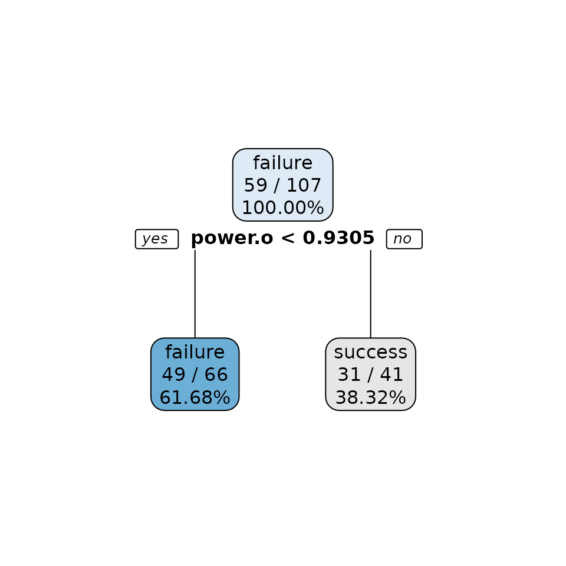
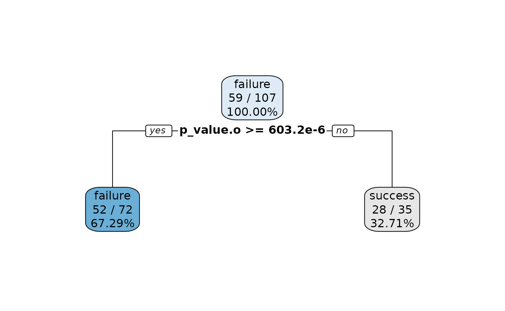
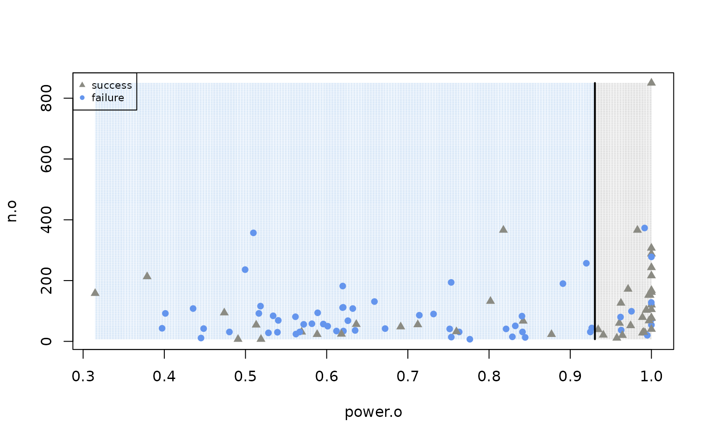
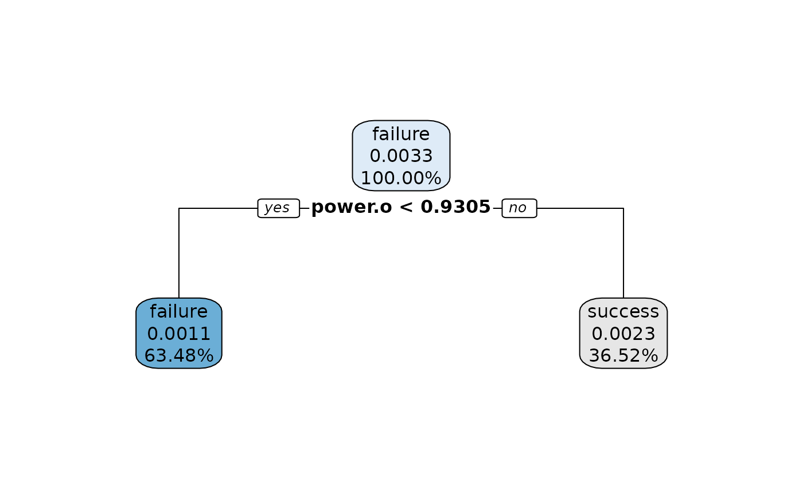
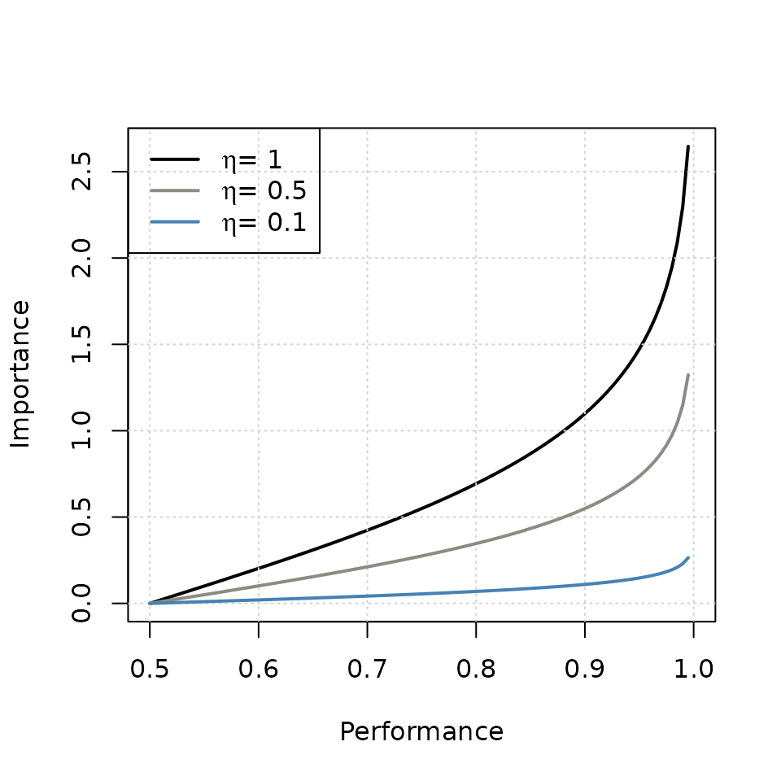
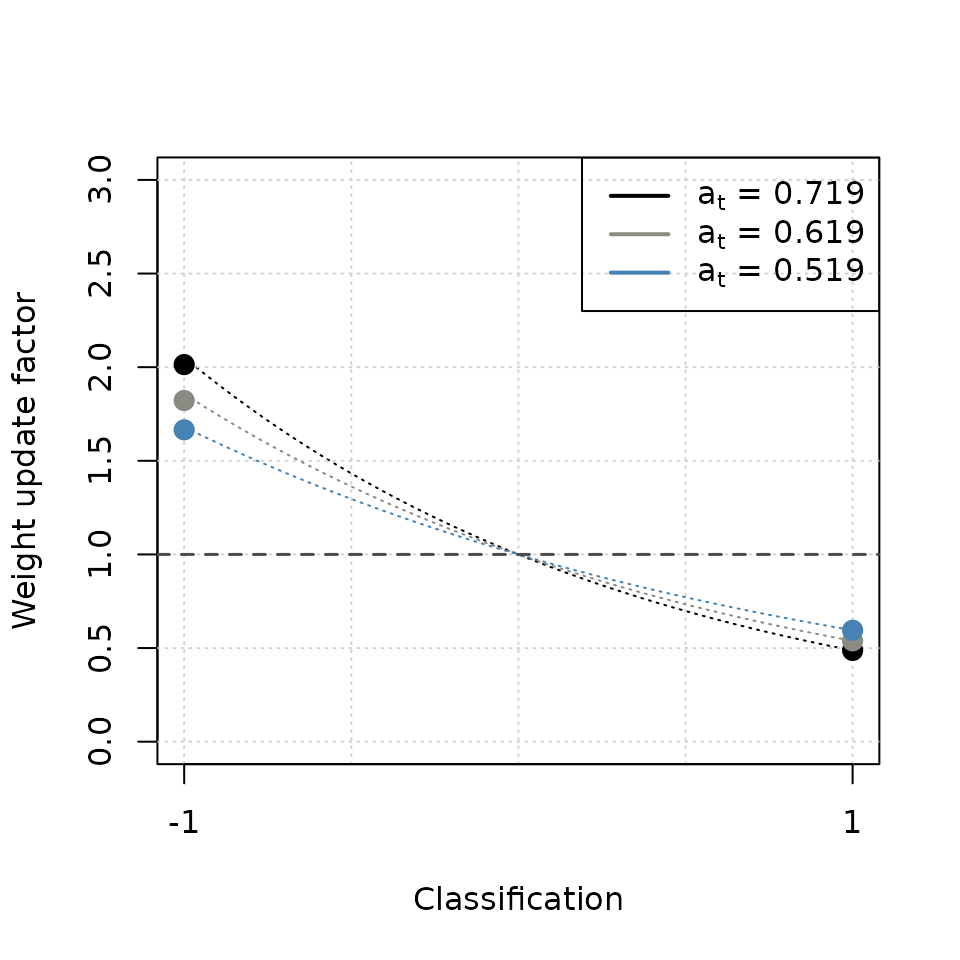
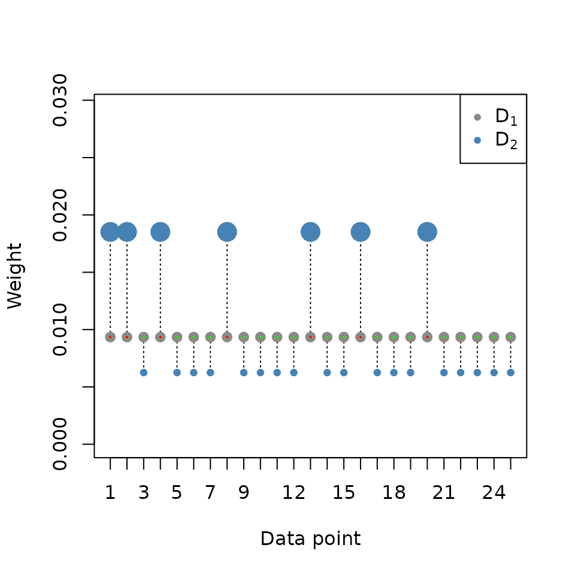
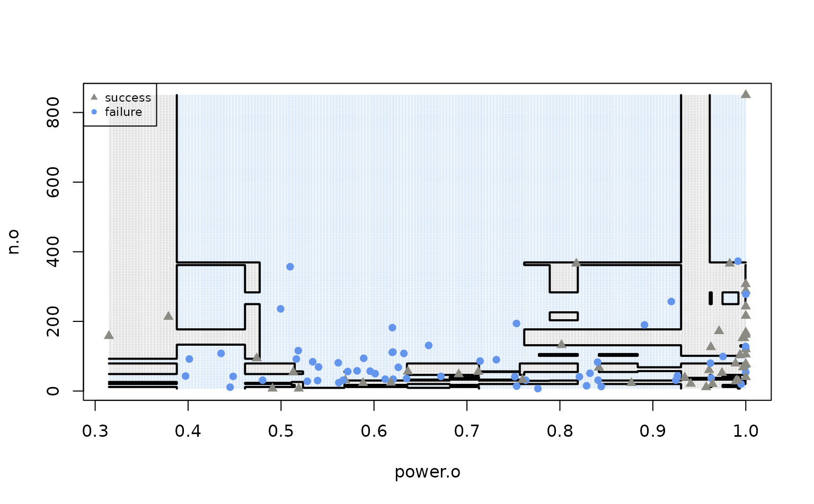

tutorial.RmdInstall the adatutor package form GitHub and load
it.
# Load the package
library(remotes)
# Install the package from GitHub
install_github("sbissantz/adatutor")Load the adatutor package.
# Load the package
library(adatutor)
#> adatutor: Introducing the Boosting Framework with AdaBoost
#> Version: 0.0.0.9000Load the altmejd data set and read the
documentation.
# Load the data
data("altmejd")
?altmejdStore the variables of interest.
Introduce the simple random and stratified data split.
Do a 70/30 simple random split.
# Reproducibility
set.seed(112)
# Split proportion
prop <- 0.7
# Number of effects
n_fx <- nrow(df)
# Number of training samples
n_train <- round(n_fx * prop)
# Training index
train_idx <- sample(seq_len(n_fx), n_train)
# Training set
train <- df[train_idx, ]
# Test set (incl. validation)
testvalid <- df[-train_idx, ]Complete a 70/15/15 simple random split.
# Reproducibility
set.seed(112)
# Split proportion
prop <- 0.5
# Number of effects
n_fx <- nrow(testvalid)
# Number of training samples
n_valid <- round(n_fx * prop)
# Training index
valid_idx <- sample(seq_len(n_fx), n_valid)
# Validation set
valid <- testvalid[valid_idx, ]
# Test set
test <- testvalid[-valid_idx, ]Check for imbalances in the outcome variable and the test set.
# Frequency tables
tbl_orig <- table(df$replicate)
tbl_testvalid <- table(testvalid$replicate)
# Relative frequencies
proportions(tbl_orig)
#>
#> failure success
#> 0.5526316 0.4473684
proportions(tbl_testvalid)
#>
#> failure success
#> 0.673913 0.326087Do a 70/30 stratified split.
# Reproducibility
set.seed(112)
# Split proportion
prop <- 0.7
# Partition data based on outcome
set_split <- split(df, df$replicate)
# Numbers of training samples
n_train <- lapply(set_split, function(set) round(nrow(set) * prop))
# Training index (stratified)
strat_idx <- mapply(function(set, n) sample(set[, "eid"], n),
set_split, n_train)
# Training index
train_idx <- df$eid %in% unlist(strat_idx)
# Training
train <- df[train_idx, ]
# Test set (incl. validation)
testvalid <- df[!train_idx, ]Complete a 70/15/15 stratified split.
# Reproducibility
set.seed(112)
# Split proportion
prop <- 0.5
# Partition data based on outcome
set_split <- split(testvalid, testvalid$replicate)
# Numbers of training samples
n_valid <- lapply(set_split, function(set) round(nrow(set) * prop))
# Validation index (stratified)
strat_idx <- mapply(function(set, n) sample(set[, "eid"], n),
set_split, n_valid)
valid_idx <- testvalid$eid %in% unlist(strat_idx)
# Validation set
valid <- testvalid[valid_idx, ]
# Test set
test <- testvalid[!valid_idx, ]Do a 70/30 random and stratified split, with the pre-implemented
functions of the adatutor package.
# Reproducibility
set.seed(112)
# Simple random split
randsplit <- random_split(df, prop = 0.7)
train <- randsplit$set1
testvalid <- randsplit$set2
# Stratified split
stratsplit <- stratified_split(df, group = "replicate", id = "eid", prop = 0.7)
train <- stratsplit$set1
testvalid <- stratsplit$set2Pre-implemented solution using the rsample package.
# Load the package
library(rsample)
set.seed(112)
# Simple random split
randsplit <- initial_split(df, prop = 0.7)
train <- training(randsplit)
testvalid <- testing(randsplit)
# Stratified split
stratsplit <- initial_split(df, prop = 0.7, strata = "replicate")
train <- training(stratsplit)
testvalid <- testing(stratsplit)Reproduce Figure 2.1.
# Extract only two prednms
# Note: Reduces run-time - decision boundary visualization
subfeat <- c("power.o", "n.o")
subdf <- train[, union(subfeat, outnme)]
# Hyperparameter setup
treehypar <- rpart::rpart.control(
# Maximum depth of any node tree
maxdepth = 1,
# Minimum n° observations in terminal node
minbucket = 4,
# Original CART with gini impurity as splitting criterion
split = "gini") # or ID3: split = "information"
# Create a decision tree
h <- rpart::rpart(replicate ~ ., data = subdf, method = "class",
control = treehypar)
# Visualize
rpart.plot::rpart.plot(h, extra = 102, digits = 4, box.palette="BuGy")
Retrieve the frequency tables for the outcome variable under the two power conditions.
Set the hyperparameter of a classification tree and fit the model to the training data.
# Load the package
library(rpart)
# Hyperparameter setup: Classification stump
treehypar <- rpart.control(
maxdepth = 1, # Maximum depth
split = "gini") # Gini impurity (default)
# Fit classification stump
cstump <- rpart(replicate ~ ., data = train[, voinms], method = "class",
control = treehypar)Visualize a fitted classification stump.
# Load the package
library(rpart.plot)
# Visualize classification stump
rpart.plot(cstump, extra = 102, digits = 4, box.palette="BuGy")
Reproduce Figure 3.
# Outcome variable
y_train <- train[, outnme]
# Number of classes
k <- length(unique(subdf$replicate))
# Range(s) as list
rng <- lapply(subdf[, subfeat], range, na.rm = TRUE)
# Grid resolution
resolution <- 1e3
# Colors
col1 <- "cornflowerblue" ; col2 <- "ivory4"
# Transparency
alpha.f <- 0.03
col1_transp <- adjustcolor(col1, alpha.f)
col2_transp <- adjustcolor(col2, alpha.f)
# First feature sequence
x1_seq <- seq(rng$power.o[1], rng$power.o[2], length.out = resolution)
# Second feature sequence
x2_seq <- seq(rng$n.o[1], rng$n.o[2], length.out = resolution)
# Make grid from sequences
grid <- expand.grid("power.o" = x1_seq, "n.o" = x2_seq)
# Predict grid
ypred <- predict(h, grid, type = "class")
# Contour matrix
z_mat <- matrix(as.integer(ypred), nrow = resolution)
# "0" means "not replicate", "1" means "replicate"
symbol_colors <- ifelse(y_train == "failure", col1, col2)
# "0" means "not replicate", "1" means "replicate"
grid_colors <- ifelse(ypred == "failure", col1_transp, col2_transp)
plot(NULL, xlim = range(x1_seq), ylim = range(x2_seq),
xlab = "power.o", ylab = "n.o")
points(grid, col = grid_colors, pch = ".")
points(subdf[,subfeat], col = symbol_colors, pch = as.integer(y_train) + 15)
contour(x1_seq, x2_seq, z_mat, add = TRUE, drawlabels = FALSE, lwd = 2,
col = "black", levels = (1:(k-1))+.5)
legend("topleft", c("success", "failure") , pch = c(17,16),
col = c(col2, col1), cex=0.7)
Reproduce Figure 4.
# Calculate Gini Impurity
x <- seq(0.01, 1, by = 0.01) # Values for fraction of class k
y <- 1 - (x^2) - (1-x)^2 # Gini Impurity calculation
# Create the plot
plot(x, y, type = "l", lwd = 2, # Specify line plot
xlab = "Proportion of Successes",
ylab = "Impurity" )
mtext("Two Class Classification Problem")
# Customize axes
axis(side = 1, at = seq(0, 1, by = 0.1))Calculate the means of neighboring units.
# Sorted vector
power_srt <- sort(train$power.o)
# Adjacent means
adjmeans <- (power_srt[-1] + power_srt[-length(power_srt)]) / 2
# Find position of value
which(round(adjmeans, 4) == 0.9305)
#> [1] 66Check if calculations in the text are correct.
# old: constant <- adjmeans[69] # 0.930541
adj_pat <- which(round(adjmeans, 4) == 0.9305)
# adj_pat <- which(round(adjmeans,7) == 0.9304579)
const <- adjmeans[adj_pat]
N_total <- nrow(train) # 107
# Left leaf (power.o < 0.9305: yes)
# Left leaf (power.o < 0.930541: yes)
criterion_left <- train$power.o < const
N_left <- length(train$replicate[criterion_left]) # 66 total
left_success <- sum(as.numeric(train$replicate[criterion_left]) - 1) # 17
left_failure <- N_left - left_success # 49 failures
# Gini impuritiy (left)
gini_left <- 1 - ( (left_failure / N_left)^2 + (left_success / N_left)^2 )
gini_left # 0.382
#> [1] 0.382461
# Right leaf (power.o < 0.9305: yes)
# Left leaf (power.o < 0.930541: yes)
criterion_right <- train$power.o >= const
N_right <- length(train$replicate[criterion_right]) # 41
right_success <- sum(as.numeric(train$replicate[criterion_right]) - 1) # 31
right_failure <- N_right - right_success # 10
# Gini impuritiy (right)
gini_right <- 1 - ( (right_failure / N_right)^2 + (right_success / N_right)^2 )
gini_right # 0.3688281
#> [1] 0.3688281
# Overall weighted Gini impurity
gini_impurity <- (N_left / N_total) * gini_left + (N_right / N_total) * gini_right
round(gini_impurity, digits = 5) # 0.37724
#> [1] 0.37724Show (quick and dirty) that value is the smallest impurity.
power_srt <- sort(train$power.o)
adjmeans <- (power_srt[-1] + power_srt[-length(power_srt)]) / 2
gini_impurity <- vector(length = length(adjmeans))
for(i in seq_along(adjmeans) ) {
constant <- adjmeans[i]
N_total <- length(y_train)
# Left leaf
criterion_left <- train$power.o < constant
N_left <- length(train$replicate[criterion_left])
left_success <- sum(as.numeric(train$replicate[criterion_left]) - 1)
left_failure <- N_left - left_success
# Right leaf
criterion_right <- train$power.o >= constant
N_right <- length(train$replicate[criterion_right])
right_success <- sum(as.numeric(train$replicate[criterion_right]) - 1)
right_failure <- N_right - right_success
# Gini index
gini_d1 <- 1 - ( (left_failure / N_left)^2 + (left_success / N_left)^2 )
gini_d2 <- 1 - ( (right_failure / N_right)^2 + (right_success / N_right)^2 )
# Impurity
gini_impurity[i] <- (N_left / N_total) * gini_d1 +
(N_right / N_total) * gini_d2
}
# Position of smallest impurity
which.min(gini_impurity)
#> [1] 66
# Outcome
adjmeans[which.min(gini_impurity)]
#> [1] 0.9304579Make the assumption of random weights explicit.
# Load the package
library(rpart.plot)
# Number of rows
m <- nrow(train)
# Equal weight to each observation
D <- rep(1, m)/m
# Fit a decision stump
cstump <- rpart(replicate ~ ., data = train[, voinms],
method = "class", weight = D, control = treehypar)
# Visualize
rpart.plot(cstump, digits = 4, box.palette="BuGy")Show sensitivity to observation weights with normalized random weights.
# Reproducibility
set.seed(112)
# Draws from std. uniform
D_raw <- runif(107)
# Normalize (sum to 1)
D <- D_raw/sum(D_raw)
# Create a decision stump
cstump_ast <- rpart(replicate ~ ., data = train[, voinms],
method = "class", weight = D, control = treehypar)
# Visualize
rpart.plot(cstump_ast, extra = 110, digits = 4, box.palette="BuGy")
Understand the givens in the AdaBoost algorithm.
# Predictors and outcome (names)
prednms ; outnme
#> [1] "power.o" "effect_size.o" "n.o" "p_value.o"
#> [1] "replicate"
# Predictor matrix
x_train <- train[, prednms]
# Outcome vector
y_train <- train[, outnme]
# Indices
i <- 1 ; m <- nrow(train)
# i-th row/element
x_train[i,] ; y_train[i]
#> power.o effect_size.o n.o p_value.o
#> 3 1 0.7198499 216 0.007
#> [1] success
#> Levels: failure success
# i-th to m-th row/element
cbind(x_train, y_train)[i:m, ]
#> power.o effect_size.o n.o p_value.o y_train
#> 3 1.0000000 0.7198499 216 7.000000e-03 success
#> 4 0.9992030 0.3839434 162 1.000000e-02 success
#> 5 1.0000000 0.8425086 72 3.300000e-02 failure
#> 6 0.3148003 0.1177690 158 1.000000e-03 success
#> 7 0.9999999 0.7615102 54 1.000000e-02 failure
#> 8 1.0000000 0.7225092 168 1.000000e-04 success
#> 9 0.6203380 0.2129218 112 3.000000e-02 failure
#> 10 0.9605680 0.4532819 60 1.100000e-02 success
#> 11 0.9999986 0.6425901 78 4.000000e-11 success
#> 13 1.0000000 0.8320657 120 3.900000e-03 failure
#> 14 0.5818172 0.2821032 58 3.100000e-02 failure
#> 15 1.0000000 0.4862234 288 1.631000e-18 success
#> 16 1.0000000 0.6644093 120 1.630000e-02 success
#> 17 0.9624359 0.3238969 126 2.600000e-05 success
#> 18 0.4484549 0.2822617 42 7.000000e-02 failure
#> 19 0.3788417 0.1132224 213 9.935133e-02 success
#> 20 0.9999362 0.3200000 307 7.361392e-09 success
#> 21 0.9937020 0.4166121 103 9.842157e-06 success
#> 23 0.9937020 0.4166121 103 9.842157e-06 success
#> 26 0.8017631 0.2415229 132 5.522083e-03 success
#> 28 0.5393518 0.3719046 30 4.300163e-02 failure
#> 30 0.9889148 0.4498593 79 3.191408e-05 success
#> 31 0.9999997 0.4200000 243 4.044577e-12 success
#> 32 0.6719845 0.3637829 42 1.787425e-02 failure
#> 34 0.5097631 0.1049515 357 4.848196e-02 failure
#> 35 0.9982975 0.3793533 152 1.092909e-06 success
#> 36 1.0000000 0.8434372 40 7.184951e-10 success
#> 37 0.9619634 0.3996079 80 2.404769e-04 failure
#> 39 0.9998523 0.4600000 128 2.696059e-08 failure
#> 40 0.6364588 0.3047247 56 2.258689e-02 success
#> 44 0.5621294 0.4249797 24 3.044959e-02 failure
#> 45 0.8910052 0.2287396 190 1.416690e-03 failure
#> 46 0.7632245 0.4613007 31 6.891150e-03 failure
#> 47 0.8769094 0.5949605 23 1.706566e-03 success
#> 49 0.9627891 0.5614225 37 2.004410e-04 failure
#> 50 0.9922970 0.6985867 28 1.760000e-05 success
#> 51 0.9407370 0.6720842 21 4.439180e-04 success
#> 52 0.4013322 0.1784776 92 4.840710e-02 failure
#> 53 0.9971635 0.5245022 68 1.590000e-12 success
#> 54 0.4738494 0.1951364 94 2.837370e-02 success
#> 56 0.9247381 0.5604991 31 6.924860e-04 failure
#> 57 0.5889038 0.2240920 94 2.817241e-02 failure
#> 59 0.9966026 0.3637324 152 3.540000e-06 success
#> 60 0.6911814 0.3481207 48 6.830000e-05 success
#> 61 0.5691234 0.3780690 31 3.005701e-02 success
#> 62 0.4801956 0.3417735 31 5.156963e-02 failure
#> 63 0.5190658 0.7378208 7 2.324979e-02 success
#> 65 0.9343876 0.5168124 39 5.410790e-04 success
#> 66 0.9642166 0.7139214 20 1.904220e-04 success
#> 67 0.4452318 0.5511783 11 5.088911e-02 failure
#> 70 0.8420102 0.3521751 67 3.000884e-03 success
#> 72 0.6120824 0.3783453 34 2.288944e-02 failure
#> 73 0.5164851 0.2080585 92 1.552091e-02 failure
#> 74 0.6588454 0.2057369 131 1.751331e-02 failure
#> 75 0.5668055 0.3771269 31 3.050319e-02 failure
#> 77 0.9754389 0.3791395 99 9.230000e-05 failure
#> 78 0.6197801 0.1672886 182 2.322168e-02 failure
#> 79 0.6321393 0.2196669 108 2.112143e-02 failure
#> 80 0.6261289 0.2740102 68 2.171150e-02 failure
#> 82 0.8209948 0.4318656 41 3.830676e-03 failure
#> 83 0.5184962 0.1858498 116 4.391041e-02 failure
#> 84 0.9915903 0.2221316 373 1.410000e-05 failure
#> 85 0.9198529 0.2076431 257 7.730870e-04 failure
#> 86 0.3972554 0.2599585 43 4.407098e-02 failure
#> 87 0.7316124 0.2682790 90 9.719762e-03 failure
#> 88 0.9743765 0.5034496 52 2.829530e-04 success
#> 90 0.8323200 0.3955592 51 3.371756e-03 failure
#> 91 0.8405684 0.3174630 83 3.071238e-03 failure
#> 94 0.4995559 0.1273924 236 5.034293e-02 failure
#> 95 0.6206368 0.3817442 34 2.159550e-02 failure
#> 96 0.5340691 0.2223302 84 3.964175e-02 failure
#> 97 1.0000000 0.5544272 278 5.760000e-24 failure
#> 98 0.7122278 0.3334411 55 1.125612e-02 success
#> 102 0.8411955 0.5017991 31 2.927080e-03 failure
#> 103 0.9712298 0.2877188 172 1.180000e-04 success
#> 105 0.6195840 0.2136868 111 2.305136e-02 failure
#> 106 0.5282607 0.3800000 28 1.713346e-02 failure
#> 107 0.9573665 0.8516794 11 2.199800e-04 success
#> 108 0.4908194 0.7218900 7 2.809598e-02 success
#> 110 0.9891173 0.6853473 28 2.930000e-05 success
#> 112 0.5403999 0.2469470 69 2.850691e-03 failure
#> 113 0.5882587 0.4456526 23 2.557046e-02 success
#> 117 0.5615388 0.2337764 81 9.205933e-03 failure
#> 118 1.0000000 0.5934058 162 1.390000e-43 success
#> 119 0.4354885 0.1729602 108 7.654847e-03 failure
#> 120 1.0000000 0.7686520 76 2.100000e-16 success
#> 121 0.7535165 0.6499556 14 6.420541e-03 failure
#> 123 0.7533511 0.1886625 194 8.092031e-03 failure
#> 124 0.8445372 0.7225364 13 2.344469e-03 failure
#> 125 0.7515001 0.4000102 41 7.866967e-03 failure
#> 126 0.7763469 0.8595524 7 2.971641e-03 failure
#> 127 0.6012606 0.3100000 50 2.341477e-02 failure
#> 129 0.9265282 0.4834423 44 6.653790e-04 failure
#> 130 0.5717263 0.2837882 56 3.369724e-02 failure
#> 132 0.9827600 0.5250000 366 5.400000e-05 success
#> 133 0.9999998 0.8160000 850 1.427000e-10 success
#> 134 0.8176784 0.2010000 366 4.400000e-03 success
#> 136 0.5131718 0.2700000 54 4.900000e-02 success
#> 139 0.8287214 0.6740000 15 4.200000e-03 failure
#> 140 0.5958613 0.2890000 57 2.900000e-02 failure
#> 142 0.9999367 0.6310000 105 8.362000e-09 success
#> 144 0.7141009 0.2690000 86 1.330000e-02 failure
#> 145 0.6181604 0.4500000 24 2.380000e-02 success
#> 147 0.7598206 0.4530000 32 9.200000e-03 success
#> 148 0.6350832 0.3770000 36 2.360000e-02 failure
#> 149 0.9949216 0.7930000 20 3.000000e-05 failure
#> 152 0.9905287 0.6740000 30 4.400000e-05 successGenerate initialization weights (normalized equal weights) in the AdaBoost algorithm.
# Initialization weights
D1 <- rep(1, m)/mFit a classification stump with the initialization weights.
# Hyperparameter setup
treehypar <- rpart.control(maxdepth = 1, split = "gini")
# Fit classification stump
h1 <- rpart(replicate ~ ., data = train[, voinms], method = "class",
weights = D1, control = treehypar)Calculate the classification stumps error.
# Retrodictions (training data)
yretro <- predict(h1, newdata = train[, voinms], type = "class")
# Retrodiction error
epsilon <- sum(D1 * (yretro != y_train))
# Retrodictions do not match observations!Calculate the classification stump’s performance.
# Retrodivitve performance
perf <- sum(D1 * (yretro == y_train))
# Retrodictive error
epsilon <- 1 - perfCalculate the classification stump’s weight assuming a learning rate eta of 1.
# Learning rate
eta <- 1
# Learner weight
alpha1 <- 1/2 * log(perf / epsilon) * etaReproduce Figure 6.
fat <- function(x, eta) 1/2 * log(x/(1-x)) * eta
curve(fat(x, 1), from = 0.5, to = 1, lwd = 2,
ylab = "Importance", xlab = "Performance")
grid()
curve(fat(x,0.5), from = 0.5, to = 1, lwd = 2, col = "ivory4", add = TRUE)
curve(fat(x,0.1), from = 0.5, to = 1, lwd = 2, col = "steelblue", add = TRUE)
legend("topleft", legend = c(expression(eta*" = 1"), expression(eta*" = 0.5"),
expression(eta*" = 0.1")),
col = c("black", "ivory4", "steelblue"), lty = c(1, 1, 1), lwd = 2)
Calculate the update factor for the initialization weights.
# Indicator trick
chi1 <- (yretro == y_train) * 1 + (yretro != y_train) * -1
# Unnormalized weights
D2_raw <- D1 * exp(-alpha1 * chi1)
# Normalization constant
Z1 <- sum(D2_raw)
# Normalized weights
D2 <- D2_raw / Z1Reproduce Figure 7.
feat <- function(at, x) exp(-at*x)
curve(feat(0.719, x), from = -1, to = 1, ylim = c(0,3), lty = 3,
xlab = "Classification", ylab = "Weight update factor", xaxt = "n")
grid()
points(c(1,-1), c(feat(0.719, 1), feat(0.7, -1)), pch = 20, cex = 2)
curve(feat(0.619,x), from = -1, to = 1, ylim = c(0,2), col = "ivory4", lty = 3,
add = TRUE)
points(c(1,-1), c(feat(0.619, 1), feat(0.6, -1)), pch = 20, cex = 2, col = "ivory4")
curve(feat(0.519,x), from = -1, to = 1, ylim = c(0,2), col = "steelblue", lty = 3,
add = TRUE)
points(c(1,-1), c(feat(0.519, 1), feat(0.51, -1)), pch = 20, cex = 2,
col = "steelblue")
abline(h = 1, lty = 2, lwd = 1.5, col = "gray30")
legend("topright", legend = c(expression(a[t]*" = 0.719"),
expression(a[t]*" = 0.619"),
expression(a[t]*" = 0.519")),
col = c("black", "ivory4", "steelblue"),
lty = c(1, 1, 1), lwd = 2)
axis(1,at = c(-1,1))
Reproduce Figure 8.
n_25 <- 25
scaling <- 175
plot(c(1, n_25), c(0, D1[1] + 0.02) , type = "n", xaxt = "n",
xlab = "Data point", ylab = "Weight")
axis(1, at = 1:n_25, labels = paste(1:25), cex = 0.5)
for(i in 1:n_25) {
lines(c(i,i),c(D1[i], D2[i]), lty = 3)
}
points(D1[1:n_25], pch = 20, col = "ivory4", cex = D1[1] * scaling)
points(D1[1:n_25], pch = 20, col = ifelse((y_train == yretro), "green", "red"),
cex = D1[1] + 0.2)
points(D2[1:n_25], pch = 20, col = "steelblue", cex = D2[1:n_25] * scaling)
legend("topright", legend = c(expression(D[1]), expression(D[2])),
col = c("ivory4", "steelblue"),
pch = c(20, 20))
Loop through the algorithmic steps.
# Hyperparameter setup
treehypar <- rpart.control(maxdepth = 1)
T <- 1e4 # Number of trees
eta <- 1 # Learning rate
# Container: Learner & weights
fit <- vector("list", T)
D <- rep(1, m)/m
for (t in seq_len(T)) {
h <- rpart(replicate ~ ., data = train[, voinms],
method = "class", weights = D, control = treehypar)
yretro <- predict(object = h, newdata = train[, voinms], type = "class")
e <- sum(D * (yretro != y_train))
a <- 0.5 * log( (1 - e) / e) * eta
chi <- (yretro == y_train) * 1 + (yretro != y_train) * -1
D_raw <- (D * exp(-a * chi))
D <- D_raw/sum(D_raw)
fit[[t]] <- list("h" = h, "a" = a)
}
names(fit) <- paste0("t", seq_len(T))
# Show the first model weight
cat("Model weight 1:", fit$t1$a)
#> Model weight 1: 0.5430949Evaluate the retrodictive performance of the ensemble.
# Boosted classification stumps
h <- lapply(fit, "[[", "h")
# Model weights
a <- sapply(fit, "[[", "a")
# Retrodictions from stumps
yretro_stumps <- sapply(h, predict, newdata = train[, prednms],
type = "vector")
# Transformed values (-1,1)
yretro_stumps <- 2 * yretro_stumps - 3
# Retrodictions from full model
yretro_ada <- sign(a %*% t(yretro_stumps))
# Confusion matrix
table(y_train, yretro_ada)
#> yretro_ada
#> y_train -1 1
#> failure 59 0
#> success 0 48
# Perfect retrodictions!Replace matrix multiplication with a loop.
Prepare the setup for the decision boundary. Note: This might run for 5 minutes.
# Outcome vector
yobs <- train[, outnme]
# Make 0/1 factor into something ADA can handle (-1/1)
yobs_ml <- 2 * as.numeric(train[, outnme]) - 3
# Number of classes
k <- length(unique(yobs_ml))
# Range(s) as list
Xobs <- train[, c("power.o", "n.o")]
rng <- lapply(Xobs, range, na.rm = TRUE)
# Grid resolution
resolution <- 1e3
# Colors
col1 <- "cornflowerblue" ; col2 <- "ivory4"
# Transparency
alpha.f <- 0.03
col1_transp <- adjustcolor(col1, alpha.f)
col2_transp <- adjustcolor(col2, alpha.f)
# First feature sequence
x1_seq <- seq(rng$power.o[1], rng$power.o[2], length.out = resolution)
# Second feature sequence
x2_seq <- seq(rng$n.o[1], rng$n.o[2], length.out = resolution)
# Make grid from sequences
grid <- expand.grid("power.o" = x1_seq, "n.o" = x2_seq)
# Make grid
# Tree hyperparameter setting
treehypar <- rpart::rpart.control(
# Slightly different hyperparameters to improve visibility of boundary
maxdepth = 2, minsplit = 5, minbucket = round(5 / 3),
cp = 1e-2, split = "gini")
# Fit AdaBoost
fit <- trainAda(replicate ~ ., data = train[,c("replicate", "power.o", "n.o")],
T = 5e2, eta = 1, treehypar = treehypar,
verbose = FALSE, input_checks = FALSE)
# Predict ADAboost
ypred_ml <- testAda(fit, grid, input_checks = FALSE, verbose = FALSE)
# Make prediction 0/1 instead of -1/1
ypred <- as.factor((ypred_ml + 1) / 2)
# Contour matrix
z_mat <- matrix(as.integer(ypred), nrow = resolution)
# "0" means "not replicate", "1" means "replicate"
symbol_colors <- ifelse(yobs == "failure", col1, col2)
grid_colors <- ifelse(ypred == 0, col1_transp, col2_transp)
plot(NULL, xlim = range(x1_seq), ylim = range(x2_seq),
xlab = "power.o", ylab = "n.o")
points(grid, col = grid_colors, pch = ".")
z_mat <- matrix(as.integer(ypred), nrow = resolution)
# For the black line
contour(x1_seq, x2_seq, z_mat, add = TRUE, drawlabels = FALSE, lwd = 2,
col = "black", levels = (1:(k-1))+.5)
points(Xobs, col = symbol_colors, pch = as.integer(yobs) + 15)
legend("topleft", c("success", "failure") , pch = c(17,16),
col = c(col2, col1), cex=0.7)
Make predictions.
# Important: Test set
y_test <- test[, outnme]
# Predictions (test data)
ypred_stumps <- sapply(h, predict, newdata = test[, prednms], type = "vector")
ypred_stumps <- 2 * ypred_stumps - 3
ypred_ada <- sign(a %*% t(ypred_stumps))
# Confusion matrix
table(y_test, ypred_ada)
#> ypred_ada
#> y_test -1 1
#> failure 8 5
#> success 5 5
# Inperfect predictions!Introduce two wrapper functions with some additional sugar.
Introduce the wrapper functions.
# Boosted stumps and weights
fit <- trainAda(replicate ~ .,
data = train[, voinms],
T = 1e4, eta = 1, # Boosting hyperparameter
treehypar = treehypar) # Tree hyperparameter
#> Start the AdaBoost training process:
#> Run mild input checks... Done
#> Start the initialization process... Done
#> Steps 1-4: Run through the algorithm steps
#> | | | 0% | | | 1% | |= | 1% | |= | 2% | |== | 2% | |== | 3% | |== | 4% | |=== | 4% | |=== | 5% | |==== | 5% | |==== | 6% | |===== | 6% | |===== | 7% | |===== | 8% | |====== | 8% | |====== | 9% | |======= | 9% | |======= | 10% | |======= | 11% | |======== | 11% | |======== | 12% | |========= | 12% | |========= | 13% | |========= | 14% | |========== | 14% | |========== | 15% | |=========== | 15% | |=========== | 16% | |============ | 16% | |============ | 17% | |============ | 18% | |============= | 18% | |============= | 19% | |============== | 19% | |============== | 20% | |============== | 21% | |=============== | 21% | |=============== | 22% | |================ | 22% | |================ | 23% | |================ | 24% | |================= | 24% | |================= | 25% | |================== | 25% | |================== | 26% | |=================== | 26% | |=================== | 27% | |=================== | 28% | |==================== | 28% | |==================== | 29% | |===================== | 29% | |===================== | 30% | |===================== | 31% | |====================== | 31% | |====================== | 32% | |======================= | 32% | |======================= | 33% | |======================= | 34% | |======================== | 34% | |======================== | 35% | |========================= | 35% | |========================= | 36% | |========================== | 36% | |========================== | 37% | |========================== | 38% | |=========================== | 38% | |=========================== | 39% | |============================ | 39% | |============================ | 40% | |============================ | 41% | |============================= | 41% | |============================= | 42% | |============================== | 42% | |============================== | 43% | |============================== | 44% | |=============================== | 44% | |=============================== | 45% | |================================ | 45% | |================================ | 46% | |================================= | 46% | |================================= | 47% | |================================= | 48% | |================================== | 48% | |================================== | 49% | |=================================== | 49% | |=================================== | 50% | |=================================== | 51% | |==================================== | 51% | |==================================== | 52% | |===================================== | 52% | |===================================== | 53% | |===================================== | 54% | |====================================== | 54% | |====================================== | 55% | |======================================= | 55% | |======================================= | 56% | |======================================== | 56% | |======================================== | 57% | |======================================== | 58% | |========================================= | 58% | |========================================= | 59% | |========================================== | 59% | |========================================== | 60% | |========================================== | 61% | |=========================================== | 61% | |=========================================== | 62% | |============================================ | 62% | |============================================ | 63% | |============================================ | 64% | |============================================= | 64% | |============================================= | 65% | |============================================== | 65% | |============================================== | 66% | |=============================================== | 66% | |=============================================== | 67% | |=============================================== | 68% | |================================================ | 68% | |================================================ | 69% | |================================================= | 69% | |================================================= | 70% | |================================================= | 71% | |================================================== | 71% | |================================================== | 72% | |=================================================== | 72% | |=================================================== | 73% | |=================================================== | 74% | |==================================================== | 74% | |==================================================== | 75% | |===================================================== | 75% | |===================================================== | 76% | |====================================================== | 76% | |====================================================== | 77% | |====================================================== | 78% | |======================================================= | 78% | |======================================================= | 79% | |======================================================== | 79% | |======================================================== | 80% | |======================================================== | 81% | |========================================================= | 81% | |========================================================= | 82% | |========================================================== | 82% | |========================================================== | 83% | |========================================================== | 84% | |=========================================================== | 84% | |=========================================================== | 85% | |============================================================ | 85% | |============================================================ | 86% | |============================================================= | 86% | |============================================================= | 87% | |============================================================= | 88% | |============================================================== | 88% | |============================================================== | 89% | |=============================================================== | 89% | |=============================================================== | 90% | |=============================================================== | 91% | |================================================================ | 91% | |================================================================ | 92% | |================================================================= | 92% | |================================================================= | 93% | |================================================================= | 94% | |================================================================== | 94% | |================================================================== | 95% | |=================================================================== | 95% | |=================================================================== | 96% | |==================================================================== | 96% | |==================================================================== | 97% | |==================================================================== | 98% | |===================================================================== | 98% | |===================================================================== | 99% | |======================================================================| 99% | |======================================================================| 100%
#> Create output... Done
#> Training process successfully completed.
#>
# Predictions on test set
ypred <- testAda(fit, data = test[, prednms])
#> Start the AdaBoost test process:
#> Run mild input checks... Done
#> Extract the trees... Done
#> Extract the model weights... Done
#> Make predictions/retrodictions
#> | | | 0% | | | 1% | |= | 1% | |= | 2% | |== | 2% | |== | 3% | |== | 4% | |=== | 4% | |=== | 5% | |==== | 5% | |==== | 6% | |===== | 6% | |===== | 7% | |===== | 8% | |====== | 8% | |====== | 9% | |======= | 9% | |======= | 10% | |======= | 11% | |======== | 11% | |======== | 12% | |========= | 12% | |========= | 13% | |========= | 14% | |========== | 14% | |========== | 15% | |=========== | 15% | |=========== | 16% | |============ | 16% | |============ | 17% | |============ | 18% | |============= | 18% | |============= | 19% | |============== | 19% | |============== | 20% | |============== | 21% | |=============== | 21% | |=============== | 22% | |================ | 22% | |================ | 23% | |================ | 24% | |================= | 24% | |================= | 25% | |================== | 25% | |================== | 26% | |=================== | 26% | |=================== | 27% | |=================== | 28% | |==================== | 28% | |==================== | 29% | |===================== | 29% | |===================== | 30% | |===================== | 31% | |====================== | 31% | |====================== | 32% | |======================= | 32% | |======================= | 33% | |======================= | 34% | |======================== | 34% | |======================== | 35% | |========================= | 35% | |========================= | 36% | |========================== | 36% | |========================== | 37% | |========================== | 38% | |=========================== | 38% | |=========================== | 39% | |============================ | 39% | |============================ | 40% | |============================ | 41% | |============================= | 41% | |============================= | 42% | |============================== | 42% | |============================== | 43% | |============================== | 44% | |=============================== | 44% | |=============================== | 45% | |================================ | 45% | |================================ | 46% | |================================= | 46% | |================================= | 47% | |================================= | 48% | |================================== | 48% | |================================== | 49% | |=================================== | 49% | |=================================== | 50% | |=================================== | 51% | |==================================== | 51% | |==================================== | 52% | |===================================== | 52% | |===================================== | 53% | |===================================== | 54% | |====================================== | 54% | |====================================== | 55% | |======================================= | 55% | |======================================= | 56% | |======================================== | 56% | |======================================== | 57% | |======================================== | 58% | |========================================= | 58% | |========================================= | 59% | |========================================== | 59% | |========================================== | 60% | |========================================== | 61% | |=========================================== | 61% | |=========================================== | 62% | |============================================ | 62% | |============================================ | 63% | |============================================ | 64% | |============================================= | 64% | |============================================= | 65% | |============================================== | 65% | |============================================== | 66% | |=============================================== | 66% | |=============================================== | 67% | |=============================================== | 68% | |================================================ | 68% | |================================================ | 69% | |================================================= | 69% | |================================================= | 70% | |================================================= | 71% | |================================================== | 71% | |================================================== | 72% | |=================================================== | 72% | |=================================================== | 73% | |=================================================== | 74% | |==================================================== | 74% | |==================================================== | 75% | |===================================================== | 75% | |===================================================== | 76% | |====================================================== | 76% | |====================================================== | 77% | |====================================================== | 78% | |======================================================= | 78% | |======================================================= | 79% | |======================================================== | 79% | |======================================================== | 80% | |======================================================== | 81% | |========================================================= | 81% | |========================================================= | 82% | |========================================================== | 82% | |========================================================== | 83% | |========================================================== | 84% | |=========================================================== | 84% | |=========================================================== | 85% | |============================================================ | 85% | |============================================================ | 86% | |============================================================= | 86% | |============================================================= | 87% | |============================================================= | 88% | |============================================================== | 88% | |============================================================== | 89% | |=============================================================== | 89% | |=============================================================== | 90% | |=============================================================== | 91% | |================================================================ | 91% | |================================================================ | 92% | |================================================================= | 92% | |================================================================= | 93% | |================================================================= | 94% | |================================================================== | 94% | |================================================================== | 95% | |=================================================================== | 95% | |=================================================================== | 96% | |==================================================================== | 96% | |==================================================================== | 97% | |==================================================================== | 98% | |===================================================================== | 98% | |===================================================================== | 99% | |======================================================================| 99% | |======================================================================| 100%
#> Combine predictions/retrodictions... Done
#> Test process successfully completed.
#> Show different measures to evaluate the predictive performance of the ensemble.
# Confusion matrix
confusion <- table(ypred, y_test)
# Accuracy
sum(diag(confusion)) / sum(confusion)
#> [1] 0.6956522
# Load the package
library(AUC)
#> AUC 0.3.2
#> Type AUCNews() to see the change log and ?AUC to get an overview.
# Area under the curve
auc(roc(ypred, y_test))
#> [1] 0.6846154
# Transformed values (-1, 1)
y1m1 <- 2 * as.numeric(y_test) - 3
# Load the package
library(mltools)
# Matthew correlation
mcc(as.numeric(ypred), y1m1)
#> [1] 0.3750458Do a leave-project-out cross-validation. Note that this runs for approximately 4 minutes.
# Partition data by pid
df_split <- split(df, df$pid)
# Pre-allocate AUC list
auc <- list()
# Leave-Project-Out Cross-Validation
runtime <- system.time({
# For each replication project...
for (rp in c("eerp", "ml1", "ml3", "rpp", "ssrp")) {
message("\nThe ", paste0(rp), " model.\n")
# Training and test set
test <- df_split[[rp]]
train <- df[!(df$pid %in% rp), ]
# Fit model to the data
fit <- trainAda(replicate ~ ., data = train[, voinms],
T = 1e4, eta = 1, # Boosting hyperparameter
treehypar = treehypar) # Tree hyperparameter
# Predictions
ypred <- testAda(fit, data = test[, prednms])
# Performance evaluation
auc[[rp]] <- auc(roc(ypred, test$replicate))
}})
#>
#> The eerp model.
#> Start the AdaBoost training process:
#> Run mild input checks... Done
#> Start the initialization process... Done
#> Steps 1-4: Run through the algorithm steps
#> | | | 0% | | | 1% | |= | 1% | |= | 2% | |== | 2% | |== | 3% | |== | 4% | |=== | 4% | |=== | 5% | |==== | 5% | |==== | 6% | |===== | 6% | |===== | 7% | |===== | 8% | |====== | 8% | |====== | 9% | |======= | 9% | |======= | 10% | |======= | 11% | |======== | 11% | |======== | 12% | |========= | 12% | |========= | 13% | |========= | 14% | |========== | 14% | |========== | 15% | |=========== | 15% | |=========== | 16% | |============ | 16% | |============ | 17% | |============ | 18% | |============= | 18% | |============= | 19% | |============== | 19% | |============== | 20% | |============== | 21% | |=============== | 21% | |=============== | 22% | |================ | 22% | |================ | 23% | |================ | 24% | |================= | 24% | |================= | 25% | |================== | 25% | |================== | 26% | |=================== | 26% | |=================== | 27% | |=================== | 28% | |==================== | 28% | |==================== | 29% | |===================== | 29% | |===================== | 30% | |===================== | 31% | |====================== | 31% | |====================== | 32% | |======================= | 32% | |======================= | 33% | |======================= | 34% | |======================== | 34% | |======================== | 35% | |========================= | 35% | |========================= | 36% | |========================== | 36% | |========================== | 37% | |========================== | 38% | |=========================== | 38% | |=========================== | 39% | |============================ | 39% | |============================ | 40% | |============================ | 41% | |============================= | 41% | |============================= | 42% | |============================== | 42% | |============================== | 43% | |============================== | 44% | |=============================== | 44% | |=============================== | 45% | |================================ | 45% | |================================ | 46% | |================================= | 46% | |================================= | 47% | |================================= | 48% | |================================== | 48% | |================================== | 49% | |=================================== | 49% | |=================================== | 50% | |=================================== | 51% | |==================================== | 51% | |==================================== | 52% | |===================================== | 52% | |===================================== | 53% | |===================================== | 54% | |====================================== | 54% | |====================================== | 55% | |======================================= | 55% | |======================================= | 56% | |======================================== | 56% | |======================================== | 57% | |======================================== | 58% | |========================================= | 58% | |========================================= | 59% | |========================================== | 59% | |========================================== | 60% | |========================================== | 61% | |=========================================== | 61% | |=========================================== | 62% | |============================================ | 62% | |============================================ | 63% | |============================================ | 64% | |============================================= | 64% | |============================================= | 65% | |============================================== | 65% | |============================================== | 66% | |=============================================== | 66% | |=============================================== | 67% | |=============================================== | 68% | |================================================ | 68% | |================================================ | 69% | |================================================= | 69% | |================================================= | 70% | |================================================= | 71% | |================================================== | 71% | |================================================== | 72% | |=================================================== | 72% | |=================================================== | 73% | |=================================================== | 74% | |==================================================== | 74% | |==================================================== | 75% | |===================================================== | 75% | |===================================================== | 76% | |====================================================== | 76% | |====================================================== | 77% | |====================================================== | 78% | |======================================================= | 78% | |======================================================= | 79% | |======================================================== | 79% | |======================================================== | 80% | |======================================================== | 81% | |========================================================= | 81% | |========================================================= | 82% | |========================================================== | 82% | |========================================================== | 83% | |========================================================== | 84% | |=========================================================== | 84% | |=========================================================== | 85% | |============================================================ | 85% | |============================================================ | 86% | |============================================================= | 86% | |============================================================= | 87% | |============================================================= | 88% | |============================================================== | 88% | |============================================================== | 89% | |=============================================================== | 89% | |=============================================================== | 90% | |=============================================================== | 91% | |================================================================ | 91% | |================================================================ | 92% | |================================================================= | 92% | |================================================================= | 93% | |================================================================= | 94% | |================================================================== | 94% | |================================================================== | 95% | |=================================================================== | 95% | |=================================================================== | 96% | |==================================================================== | 96% | |==================================================================== | 97% | |==================================================================== | 98% | |===================================================================== | 98% | |===================================================================== | 99% | |======================================================================| 99% | |======================================================================| 100%
#> Create output... Done
#> Training process successfully completed.
#> Start the AdaBoost test process:
#> Run mild input checks... Done
#> Extract the trees... Done
#> Extract the model weights... Done
#> Make predictions/retrodictions
#> | | | 0% | | | 1% | |= | 1% | |= | 2% | |== | 2% | |== | 3% | |== | 4% | |=== | 4% | |=== | 5% | |==== | 5% | |==== | 6% | |===== | 6% | |===== | 7% | |===== | 8% | |====== | 8% | |====== | 9% | |======= | 9% | |======= | 10% | |======= | 11% | |======== | 11% | |======== | 12% | |========= | 12% | |========= | 13% | |========= | 14% | |========== | 14% | |========== | 15% | |=========== | 15% | |=========== | 16% | |============ | 16% | |============ | 17% | |============ | 18% | |============= | 18% | |============= | 19% | |============== | 19% | |============== | 20% | |============== | 21% | |=============== | 21% | |=============== | 22% | |================ | 22% | |================ | 23% | |================ | 24% | |================= | 24% | |================= | 25% | |================== | 25% | |================== | 26% | |=================== | 26% | |=================== | 27% | |=================== | 28% | |==================== | 28% | |==================== | 29% | |===================== | 29% | |===================== | 30% | |===================== | 31% | |====================== | 31% | |====================== | 32% | |======================= | 32% | |======================= | 33% | |======================= | 34% | |======================== | 34% | |======================== | 35% | |========================= | 35% | |========================= | 36% | |========================== | 36% | |========================== | 37% | |========================== | 38% | |=========================== | 38% | |=========================== | 39% | |============================ | 39% | |============================ | 40% | |============================ | 41% | |============================= | 41% | |============================= | 42% | |============================== | 42% | |============================== | 43% | |============================== | 44% | |=============================== | 44% | |=============================== | 45% | |================================ | 45% | |================================ | 46% | |================================= | 46% | |================================= | 47% | |================================= | 48% | |================================== | 48% | |================================== | 49% | |=================================== | 49% | |=================================== | 50% | |=================================== | 51% | |==================================== | 51% | |==================================== | 52% | |===================================== | 52% | |===================================== | 53% | |===================================== | 54% | |====================================== | 54% | |====================================== | 55% | |======================================= | 55% | |======================================= | 56% | |======================================== | 56% | |======================================== | 57% | |======================================== | 58% | |========================================= | 58% | |========================================= | 59% | |========================================== | 59% | |========================================== | 60% | |========================================== | 61% | |=========================================== | 61% | |=========================================== | 62% | |============================================ | 62% | |============================================ | 63% | |============================================ | 64% | |============================================= | 64% | |============================================= | 65% | |============================================== | 65% | |============================================== | 66% | |=============================================== | 66% | |=============================================== | 67% | |=============================================== | 68% | |================================================ | 68% | |================================================ | 69% | |================================================= | 69% | |================================================= | 70% | |================================================= | 71% | |================================================== | 71% | |================================================== | 72% | |=================================================== | 72% | |=================================================== | 73% | |=================================================== | 74% | |==================================================== | 74% | |==================================================== | 75% | |===================================================== | 75% | |===================================================== | 76% | |====================================================== | 76% | |====================================================== | 77% | |====================================================== | 78% | |======================================================= | 78% | |======================================================= | 79% | |======================================================== | 79% | |======================================================== | 80% | |======================================================== | 81% | |========================================================= | 81% | |========================================================= | 82% | |========================================================== | 82% | |========================================================== | 83% | |========================================================== | 84% | |=========================================================== | 84% | |=========================================================== | 85% | |============================================================ | 85% | |============================================================ | 86% | |============================================================= | 86% | |============================================================= | 87% | |============================================================= | 88% | |============================================================== | 88% | |============================================================== | 89% | |=============================================================== | 89% | |=============================================================== | 90% | |=============================================================== | 91% | |================================================================ | 91% | |================================================================ | 92% | |================================================================= | 92% | |================================================================= | 93% | |================================================================= | 94% | |================================================================== | 94% | |================================================================== | 95% | |=================================================================== | 95% | |=================================================================== | 96% | |==================================================================== | 96% | |==================================================================== | 97% | |==================================================================== | 98% | |===================================================================== | 98% | |===================================================================== | 99% | |======================================================================| 99% | |======================================================================| 100%
#> Combine predictions/retrodictions... Done
#> Test process successfully completed.
#>
#>
#> The ml1 model.
#> Start the AdaBoost training process:
#> Run mild input checks... Done
#> Start the initialization process... Done
#> Steps 1-4: Run through the algorithm steps
#> | | | 0% | | | 1% | |= | 1% | |= | 2% | |== | 2% | |== | 3% | |== | 4% | |=== | 4% | |=== | 5% | |==== | 5% | |==== | 6% | |===== | 6% | |===== | 7% | |===== | 8% | |====== | 8% | |====== | 9% | |======= | 9% | |======= | 10% | |======= | 11% | |======== | 11% | |======== | 12% | |========= | 12% | |========= | 13% | |========= | 14% | |========== | 14% | |========== | 15% | |=========== | 15% | |=========== | 16% | |============ | 16% | |============ | 17% | |============ | 18% | |============= | 18% | |============= | 19% | |============== | 19% | |============== | 20% | |============== | 21% | |=============== | 21% | |=============== | 22% | |================ | 22% | |================ | 23% | |================ | 24% | |================= | 24% | |================= | 25% | |================== | 25% | |================== | 26% | |=================== | 26% | |=================== | 27% | |=================== | 28% | |==================== | 28% | |==================== | 29% | |===================== | 29% | |===================== | 30% | |===================== | 31% | |====================== | 31% | |====================== | 32% | |======================= | 32% | |======================= | 33% | |======================= | 34% | |======================== | 34% | |======================== | 35% | |========================= | 35% | |========================= | 36% | |========================== | 36% | |========================== | 37% | |========================== | 38% | |=========================== | 38% | |=========================== | 39% | |============================ | 39% | |============================ | 40% | |============================ | 41% | |============================= | 41% | |============================= | 42% | |============================== | 42% | |============================== | 43% | |============================== | 44% | |=============================== | 44% | |=============================== | 45% | |================================ | 45% | |================================ | 46% | |================================= | 46% | |================================= | 47% | |================================= | 48% | |================================== | 48% | |================================== | 49% | |=================================== | 49% | |=================================== | 50% | |=================================== | 51% | |==================================== | 51% | |==================================== | 52% | |===================================== | 52% | |===================================== | 53% | |===================================== | 54% | |====================================== | 54% | |====================================== | 55% | |======================================= | 55% | |======================================= | 56% | |======================================== | 56% | |======================================== | 57% | |======================================== | 58% | |========================================= | 58% | |========================================= | 59% | |========================================== | 59% | |========================================== | 60% | |========================================== | 61% | |=========================================== | 61% | |=========================================== | 62% | |============================================ | 62% | |============================================ | 63% | |============================================ | 64% | |============================================= | 64% | |============================================= | 65% | |============================================== | 65% | |============================================== | 66% | |=============================================== | 66% | |=============================================== | 67% | |=============================================== | 68% | |================================================ | 68% | |================================================ | 69% | |================================================= | 69% | |================================================= | 70% | |================================================= | 71% | |================================================== | 71% | |================================================== | 72% | |=================================================== | 72% | |=================================================== | 73% | |=================================================== | 74% | |==================================================== | 74% | |==================================================== | 75% | |===================================================== | 75% | |===================================================== | 76% | |====================================================== | 76% | |====================================================== | 77% | |====================================================== | 78% | |======================================================= | 78% | |======================================================= | 79% | |======================================================== | 79% | |======================================================== | 80% | |======================================================== | 81% | |========================================================= | 81% | |========================================================= | 82% | |========================================================== | 82% | |========================================================== | 83% | |========================================================== | 84% | |=========================================================== | 84% | |=========================================================== | 85% | |============================================================ | 85% | |============================================================ | 86% | |============================================================= | 86% | |============================================================= | 87% | |============================================================= | 88% | |============================================================== | 88% | |============================================================== | 89% | |=============================================================== | 89% | |=============================================================== | 90% | |=============================================================== | 91% | |================================================================ | 91% | |================================================================ | 92% | |================================================================= | 92% | |================================================================= | 93% | |================================================================= | 94% | |================================================================== | 94% | |================================================================== | 95% | |=================================================================== | 95% | |=================================================================== | 96% | |==================================================================== | 96% | |==================================================================== | 97% | |==================================================================== | 98% | |===================================================================== | 98% | |===================================================================== | 99% | |======================================================================| 99% | |======================================================================| 100%
#> Create output... Done
#> Training process successfully completed.
#> Start the AdaBoost test process:
#> Run mild input checks... Done
#> Extract the trees... Done
#> Extract the model weights... Done
#> Make predictions/retrodictions
#> | | | 0% | | | 1% | |= | 1% | |= | 2% | |== | 2% | |== | 3% | |== | 4% | |=== | 4% | |=== | 5% | |==== | 5% | |==== | 6% | |===== | 6% | |===== | 7% | |===== | 8% | |====== | 8% | |====== | 9% | |======= | 9% | |======= | 10% | |======= | 11% | |======== | 11% | |======== | 12% | |========= | 12% | |========= | 13% | |========= | 14% | |========== | 14% | |========== | 15% | |=========== | 15% | |=========== | 16% | |============ | 16% | |============ | 17% | |============ | 18% | |============= | 18% | |============= | 19% | |============== | 19% | |============== | 20% | |============== | 21% | |=============== | 21% | |=============== | 22% | |================ | 22% | |================ | 23% | |================ | 24% | |================= | 24% | |================= | 25% | |================== | 25% | |================== | 26% | |=================== | 26% | |=================== | 27% | |=================== | 28% | |==================== | 28% | |==================== | 29% | |===================== | 29% | |===================== | 30% | |===================== | 31% | |====================== | 31% | |====================== | 32% | |======================= | 32% | |======================= | 33% | |======================= | 34% | |======================== | 34% | |======================== | 35% | |========================= | 35% | |========================= | 36% | |========================== | 36% | |========================== | 37% | |========================== | 38% | |=========================== | 38% | |=========================== | 39% | |============================ | 39% | |============================ | 40% | |============================ | 41% | |============================= | 41% | |============================= | 42% | |============================== | 42% | |============================== | 43% | |============================== | 44% | |=============================== | 44% | |=============================== | 45% | |================================ | 45% | |================================ | 46% | |================================= | 46% | |================================= | 47% | |================================= | 48% | |================================== | 48% | |================================== | 49% | |=================================== | 49% | |=================================== | 50% | |=================================== | 51% | |==================================== | 51% | |==================================== | 52% | |===================================== | 52% | |===================================== | 53% | |===================================== | 54% | |====================================== | 54% | |====================================== | 55% | |======================================= | 55% | |======================================= | 56% | |======================================== | 56% | |======================================== | 57% | |======================================== | 58% | |========================================= | 58% | |========================================= | 59% | |========================================== | 59% | |========================================== | 60% | |========================================== | 61% | |=========================================== | 61% | |=========================================== | 62% | |============================================ | 62% | |============================================ | 63% | |============================================ | 64% | |============================================= | 64% | |============================================= | 65% | |============================================== | 65% | |============================================== | 66% | |=============================================== | 66% | |=============================================== | 67% | |=============================================== | 68% | |================================================ | 68% | |================================================ | 69% | |================================================= | 69% | |================================================= | 70% | |================================================= | 71% | |================================================== | 71% | |================================================== | 72% | |=================================================== | 72% | |=================================================== | 73% | |=================================================== | 74% | |==================================================== | 74% | |==================================================== | 75% | |===================================================== | 75% | |===================================================== | 76% | |====================================================== | 76% | |====================================================== | 77% | |====================================================== | 78% | |======================================================= | 78% | |======================================================= | 79% | |======================================================== | 79% | |======================================================== | 80% | |======================================================== | 81% | |========================================================= | 81% | |========================================================= | 82% | |========================================================== | 82% | |========================================================== | 83% | |========================================================== | 84% | |=========================================================== | 84% | |=========================================================== | 85% | |============================================================ | 85% | |============================================================ | 86% | |============================================================= | 86% | |============================================================= | 87% | |============================================================= | 88% | |============================================================== | 88% | |============================================================== | 89% | |=============================================================== | 89% | |=============================================================== | 90% | |=============================================================== | 91% | |================================================================ | 91% | |================================================================ | 92% | |================================================================= | 92% | |================================================================= | 93% | |================================================================= | 94% | |================================================================== | 94% | |================================================================== | 95% | |=================================================================== | 95% | |=================================================================== | 96% | |==================================================================== | 96% | |==================================================================== | 97% | |==================================================================== | 98% | |===================================================================== | 98% | |===================================================================== | 99% | |======================================================================| 99% | |======================================================================| 100%
#> Combine predictions/retrodictions... Done
#> Test process successfully completed.
#>
#>
#> The ml3 model.
#> Start the AdaBoost training process:
#> Run mild input checks... Done
#> Start the initialization process... Done
#> Steps 1-4: Run through the algorithm steps
#> | | | 0% | | | 1% | |= | 1% | |= | 2% | |== | 2% | |== | 3% | |== | 4% | |=== | 4% | |=== | 5% | |==== | 5% | |==== | 6% | |===== | 6% | |===== | 7% | |===== | 8% | |====== | 8% | |====== | 9% | |======= | 9% | |======= | 10% | |======= | 11% | |======== | 11% | |======== | 12% | |========= | 12% | |========= | 13% | |========= | 14% | |========== | 14% | |========== | 15% | |=========== | 15% | |=========== | 16% | |============ | 16% | |============ | 17% | |============ | 18% | |============= | 18% | |============= | 19% | |============== | 19% | |============== | 20% | |============== | 21% | |=============== | 21% | |=============== | 22% | |================ | 22% | |================ | 23% | |================ | 24% | |================= | 24% | |================= | 25% | |================== | 25% | |================== | 26% | |=================== | 26% | |=================== | 27% | |=================== | 28% | |==================== | 28% | |==================== | 29% | |===================== | 29% | |===================== | 30% | |===================== | 31% | |====================== | 31% | |====================== | 32% | |======================= | 32% | |======================= | 33% | |======================= | 34% | |======================== | 34% | |======================== | 35% | |========================= | 35% | |========================= | 36% | |========================== | 36% | |========================== | 37% | |========================== | 38% | |=========================== | 38% | |=========================== | 39% | |============================ | 39% | |============================ | 40% | |============================ | 41% | |============================= | 41% | |============================= | 42% | |============================== | 42% | |============================== | 43% | |============================== | 44% | |=============================== | 44% | |=============================== | 45% | |================================ | 45% | |================================ | 46% | |================================= | 46% | |================================= | 47% | |================================= | 48% | |================================== | 48% | |================================== | 49% | |=================================== | 49% | |=================================== | 50% | |=================================== | 51% | |==================================== | 51% | |==================================== | 52% | |===================================== | 52% | |===================================== | 53% | |===================================== | 54% | |====================================== | 54% | |====================================== | 55% | |======================================= | 55% | |======================================= | 56% | |======================================== | 56% | |======================================== | 57% | |======================================== | 58% | |========================================= | 58% | |========================================= | 59% | |========================================== | 59% | |========================================== | 60% | |========================================== | 61% | |=========================================== | 61% | |=========================================== | 62% | |============================================ | 62% | |============================================ | 63% | |============================================ | 64% | |============================================= | 64% | |============================================= | 65% | |============================================== | 65% | |============================================== | 66% | |=============================================== | 66% | |=============================================== | 67% | |=============================================== | 68% | |================================================ | 68% | |================================================ | 69% | |================================================= | 69% | |================================================= | 70% | |================================================= | 71% | |================================================== | 71% | |================================================== | 72% | |=================================================== | 72% | |=================================================== | 73% | |=================================================== | 74% | |==================================================== | 74% | |==================================================== | 75% | |===================================================== | 75% | |===================================================== | 76% | |====================================================== | 76% | |====================================================== | 77% | |====================================================== | 78% | |======================================================= | 78% | |======================================================= | 79% | |======================================================== | 79% | |======================================================== | 80% | |======================================================== | 81% | |========================================================= | 81% | |========================================================= | 82% | |========================================================== | 82% | |========================================================== | 83% | |========================================================== | 84% | |=========================================================== | 84% | |=========================================================== | 85% | |============================================================ | 85% | |============================================================ | 86% | |============================================================= | 86% | |============================================================= | 87% | |============================================================= | 88% | |============================================================== | 88% | |============================================================== | 89% | |=============================================================== | 89% | |=============================================================== | 90% | |=============================================================== | 91% | |================================================================ | 91% | |================================================================ | 92% | |================================================================= | 92% | |================================================================= | 93% | |================================================================= | 94% | |================================================================== | 94% | |================================================================== | 95% | |=================================================================== | 95% | |=================================================================== | 96% | |==================================================================== | 96% | |==================================================================== | 97% | |==================================================================== | 98% | |===================================================================== | 98% | |===================================================================== | 99% | |======================================================================| 99% | |======================================================================| 100%
#> Create output... Done
#> Training process successfully completed.
#> Start the AdaBoost test process:
#> Run mild input checks... Done
#> Extract the trees... Done
#> Extract the model weights... Done
#> Make predictions/retrodictions
#> | | | 0% | | | 1% | |= | 1% | |= | 2% | |== | 2% | |== | 3% | |== | 4% | |=== | 4% | |=== | 5% | |==== | 5% | |==== | 6% | |===== | 6% | |===== | 7% | |===== | 8% | |====== | 8% | |====== | 9% | |======= | 9% | |======= | 10% | |======= | 11% | |======== | 11% | |======== | 12% | |========= | 12% | |========= | 13% | |========= | 14% | |========== | 14% | |========== | 15% | |=========== | 15% | |=========== | 16% | |============ | 16% | |============ | 17% | |============ | 18% | |============= | 18% | |============= | 19% | |============== | 19% | |============== | 20% | |============== | 21% | |=============== | 21% | |=============== | 22% | |================ | 22% | |================ | 23% | |================ | 24% | |================= | 24% | |================= | 25% | |================== | 25% | |================== | 26% | |=================== | 26% | |=================== | 27% | |=================== | 28% | |==================== | 28% | |==================== | 29% | |===================== | 29% | |===================== | 30% | |===================== | 31% | |====================== | 31% | |====================== | 32% | |======================= | 32% | |======================= | 33% | |======================= | 34% | |======================== | 34% | |======================== | 35% | |========================= | 35% | |========================= | 36% | |========================== | 36% | |========================== | 37% | |========================== | 38% | |=========================== | 38% | |=========================== | 39% | |============================ | 39% | |============================ | 40% | |============================ | 41% | |============================= | 41% | |============================= | 42% | |============================== | 42% | |============================== | 43% | |============================== | 44% | |=============================== | 44% | |=============================== | 45% | |================================ | 45% | |================================ | 46% | |================================= | 46% | |================================= | 47% | |================================= | 48% | |================================== | 48% | |================================== | 49% | |=================================== | 49% | |=================================== | 50% | |=================================== | 51% | |==================================== | 51% | |==================================== | 52% | |===================================== | 52% | |===================================== | 53% | |===================================== | 54% | |====================================== | 54% | |====================================== | 55% | |======================================= | 55% | |======================================= | 56% | |======================================== | 56% | |======================================== | 57% | |======================================== | 58% | |========================================= | 58% | |========================================= | 59% | |========================================== | 59% | |========================================== | 60% | |========================================== | 61% | |=========================================== | 61% | |=========================================== | 62% | |============================================ | 62% | |============================================ | 63% | |============================================ | 64% | |============================================= | 64% | |============================================= | 65% | |============================================== | 65% | |============================================== | 66% | |=============================================== | 66% | |=============================================== | 67% | |=============================================== | 68% | |================================================ | 68% | |================================================ | 69% | |================================================= | 69% | |================================================= | 70% | |================================================= | 71% | |================================================== | 71% | |================================================== | 72% | |=================================================== | 72% | |=================================================== | 73% | |=================================================== | 74% | |==================================================== | 74% | |==================================================== | 75% | |===================================================== | 75% | |===================================================== | 76% | |====================================================== | 76% | |====================================================== | 77% | |====================================================== | 78% | |======================================================= | 78% | |======================================================= | 79% | |======================================================== | 79% | |======================================================== | 80% | |======================================================== | 81% | |========================================================= | 81% | |========================================================= | 82% | |========================================================== | 82% | |========================================================== | 83% | |========================================================== | 84% | |=========================================================== | 84% | |=========================================================== | 85% | |============================================================ | 85% | |============================================================ | 86% | |============================================================= | 86% | |============================================================= | 87% | |============================================================= | 88% | |============================================================== | 88% | |============================================================== | 89% | |=============================================================== | 89% | |=============================================================== | 90% | |=============================================================== | 91% | |================================================================ | 91% | |================================================================ | 92% | |================================================================= | 92% | |================================================================= | 93% | |================================================================= | 94% | |================================================================== | 94% | |================================================================== | 95% | |=================================================================== | 95% | |=================================================================== | 96% | |==================================================================== | 96% | |==================================================================== | 97% | |==================================================================== | 98% | |===================================================================== | 98% | |===================================================================== | 99% | |======================================================================| 99% | |======================================================================| 100%
#> Combine predictions/retrodictions... Done
#> Test process successfully completed.
#>
#>
#> The rpp model.
#> Start the AdaBoost training process:
#> Run mild input checks... Done
#> Start the initialization process... Done
#> Steps 1-4: Run through the algorithm steps
#> | | | 0% | | | 1% | |= | 1% | |= | 2% | |== | 2% | |== | 3% | |== | 4% | |=== | 4% | |=== | 5% | |==== | 5% | |==== | 6% | |===== | 6% | |===== | 7% | |===== | 8% | |====== | 8% | |====== | 9% | |======= | 9% | |======= | 10% | |======= | 11% | |======== | 11% | |======== | 12% | |========= | 12% | |========= | 13% | |========= | 14% | |========== | 14% | |========== | 15% | |=========== | 15% | |=========== | 16% | |============ | 16% | |============ | 17% | |============ | 18% | |============= | 18% | |============= | 19% | |============== | 19% | |============== | 20% | |============== | 21% | |=============== | 21% | |=============== | 22% | |================ | 22% | |================ | 23% | |================ | 24% | |================= | 24% | |================= | 25% | |================== | 25% | |================== | 26% | |=================== | 26% | |=================== | 27% | |=================== | 28% | |==================== | 28% | |==================== | 29% | |===================== | 29% | |===================== | 30% | |===================== | 31% | |====================== | 31% | |====================== | 32% | |======================= | 32% | |======================= | 33% | |======================= | 34% | |======================== | 34% | |======================== | 35% | |========================= | 35% | |========================= | 36% | |========================== | 36% | |========================== | 37% | |========================== | 38% | |=========================== | 38% | |=========================== | 39% | |============================ | 39% | |============================ | 40% | |============================ | 41% | |============================= | 41% | |============================= | 42% | |============================== | 42% | |============================== | 43% | |============================== | 44% | |=============================== | 44% | |=============================== | 45% | |================================ | 45% | |================================ | 46% | |================================= | 46% | |================================= | 47% | |================================= | 48% | |================================== | 48% | |================================== | 49% | |=================================== | 49% | |=================================== | 50% | |=================================== | 51% | |==================================== | 51% | |==================================== | 52% | |===================================== | 52% | |===================================== | 53% | |===================================== | 54% | |====================================== | 54% | |====================================== | 55% | |======================================= | 55% | |======================================= | 56% | |======================================== | 56% | |======================================== | 57% | |======================================== | 58% | |========================================= | 58% | |========================================= | 59% | |========================================== | 59% | |========================================== | 60% | |========================================== | 61% | |=========================================== | 61% | |=========================================== | 62% | |============================================ | 62% | |============================================ | 63% | |============================================ | 64% | |============================================= | 64% | |============================================= | 65% | |============================================== | 65% | |============================================== | 66% | |=============================================== | 66% | |=============================================== | 67% | |=============================================== | 68% | |================================================ | 68% | |================================================ | 69% | |================================================= | 69% | |================================================= | 70% | |================================================= | 71% | |================================================== | 71% | |================================================== | 72% | |=================================================== | 72% | |=================================================== | 73% | |=================================================== | 74% | |==================================================== | 74% | |==================================================== | 75% | |===================================================== | 75% | |===================================================== | 76% | |====================================================== | 76% | |====================================================== | 77% | |====================================================== | 78% | |======================================================= | 78% | |======================================================= | 79% | |======================================================== | 79% | |======================================================== | 80% | |======================================================== | 81% | |========================================================= | 81% | |========================================================= | 82% | |========================================================== | 82% | |========================================================== | 83% | |========================================================== | 84% | |=========================================================== | 84% | |=========================================================== | 85% | |============================================================ | 85% | |============================================================ | 86% | |============================================================= | 86% | |============================================================= | 87% | |============================================================= | 88% | |============================================================== | 88% | |============================================================== | 89% | |=============================================================== | 89% | |=============================================================== | 90% | |=============================================================== | 91% | |================================================================ | 91% | |================================================================ | 92% | |================================================================= | 92% | |================================================================= | 93% | |================================================================= | 94% | |================================================================== | 94% | |================================================================== | 95% | |=================================================================== | 95% | |=================================================================== | 96% | |==================================================================== | 96% | |==================================================================== | 97% | |==================================================================== | 98% | |===================================================================== | 98% | |===================================================================== | 99% | |======================================================================| 99% | |======================================================================| 100%
#> Create output... Done
#> Training process successfully completed.
#> Start the AdaBoost test process:
#> Run mild input checks... Done
#> Extract the trees... Done
#> Extract the model weights... Done
#> Make predictions/retrodictions
#> | | | 0% | | | 1% | |= | 1% | |= | 2% | |== | 2% | |== | 3% | |== | 4% | |=== | 4% | |=== | 5% | |==== | 5% | |==== | 6% | |===== | 6% | |===== | 7% | |===== | 8% | |====== | 8% | |====== | 9% | |======= | 9% | |======= | 10% | |======= | 11% | |======== | 11% | |======== | 12% | |========= | 12% | |========= | 13% | |========= | 14% | |========== | 14% | |========== | 15% | |=========== | 15% | |=========== | 16% | |============ | 16% | |============ | 17% | |============ | 18% | |============= | 18% | |============= | 19% | |============== | 19% | |============== | 20% | |============== | 21% | |=============== | 21% | |=============== | 22% | |================ | 22% | |================ | 23% | |================ | 24% | |================= | 24% | |================= | 25% | |================== | 25% | |================== | 26% | |=================== | 26% | |=================== | 27% | |=================== | 28% | |==================== | 28% | |==================== | 29% | |===================== | 29% | |===================== | 30% | |===================== | 31% | |====================== | 31% | |====================== | 32% | |======================= | 32% | |======================= | 33% | |======================= | 34% | |======================== | 34% | |======================== | 35% | |========================= | 35% | |========================= | 36% | |========================== | 36% | |========================== | 37% | |========================== | 38% | |=========================== | 38% | |=========================== | 39% | |============================ | 39% | |============================ | 40% | |============================ | 41% | |============================= | 41% | |============================= | 42% | |============================== | 42% | |============================== | 43% | |============================== | 44% | |=============================== | 44% | |=============================== | 45% | |================================ | 45% | |================================ | 46% | |================================= | 46% | |================================= | 47% | |================================= | 48% | |================================== | 48% | |================================== | 49% | |=================================== | 49% | |=================================== | 50% | |=================================== | 51% | |==================================== | 51% | |==================================== | 52% | |===================================== | 52% | |===================================== | 53% | |===================================== | 54% | |====================================== | 54% | |====================================== | 55% | |======================================= | 55% | |======================================= | 56% | |======================================== | 56% | |======================================== | 57% | |======================================== | 58% | |========================================= | 58% | |========================================= | 59% | |========================================== | 59% | |========================================== | 60% | |========================================== | 61% | |=========================================== | 61% | |=========================================== | 62% | |============================================ | 62% | |============================================ | 63% | |============================================ | 64% | |============================================= | 64% | |============================================= | 65% | |============================================== | 65% | |============================================== | 66% | |=============================================== | 66% | |=============================================== | 67% | |=============================================== | 68% | |================================================ | 68% | |================================================ | 69% | |================================================= | 69% | |================================================= | 70% | |================================================= | 71% | |================================================== | 71% | |================================================== | 72% | |=================================================== | 72% | |=================================================== | 73% | |=================================================== | 74% | |==================================================== | 74% | |==================================================== | 75% | |===================================================== | 75% | |===================================================== | 76% | |====================================================== | 76% | |====================================================== | 77% | |====================================================== | 78% | |======================================================= | 78% | |======================================================= | 79% | |======================================================== | 79% | |======================================================== | 80% | |======================================================== | 81% | |========================================================= | 81% | |========================================================= | 82% | |========================================================== | 82% | |========================================================== | 83% | |========================================================== | 84% | |=========================================================== | 84% | |=========================================================== | 85% | |============================================================ | 85% | |============================================================ | 86% | |============================================================= | 86% | |============================================================= | 87% | |============================================================= | 88% | |============================================================== | 88% | |============================================================== | 89% | |=============================================================== | 89% | |=============================================================== | 90% | |=============================================================== | 91% | |================================================================ | 91% | |================================================================ | 92% | |================================================================= | 92% | |================================================================= | 93% | |================================================================= | 94% | |================================================================== | 94% | |================================================================== | 95% | |=================================================================== | 95% | |=================================================================== | 96% | |==================================================================== | 96% | |==================================================================== | 97% | |==================================================================== | 98% | |===================================================================== | 98% | |===================================================================== | 99% | |======================================================================| 99% | |======================================================================| 100%
#> Combine predictions/retrodictions... Done
#> Test process successfully completed.
#>
#>
#> The ssrp model.
#> Start the AdaBoost training process:
#> Run mild input checks... Done
#> Start the initialization process... Done
#> Steps 1-4: Run through the algorithm steps
#> | | | 0% | | | 1% | |= | 1% | |= | 2% | |== | 2% | |== | 3% | |== | 4% | |=== | 4% | |=== | 5% | |==== | 5% | |==== | 6% | |===== | 6% | |===== | 7% | |===== | 8% | |====== | 8% | |====== | 9% | |======= | 9% | |======= | 10% | |======= | 11% | |======== | 11% | |======== | 12% | |========= | 12% | |========= | 13% | |========= | 14% | |========== | 14% | |========== | 15% | |=========== | 15% | |=========== | 16% | |============ | 16% | |============ | 17% | |============ | 18% | |============= | 18% | |============= | 19% | |============== | 19% | |============== | 20% | |============== | 21% | |=============== | 21% | |=============== | 22% | |================ | 22% | |================ | 23% | |================ | 24% | |================= | 24% | |================= | 25% | |================== | 25% | |================== | 26% | |=================== | 26% | |=================== | 27% | |=================== | 28% | |==================== | 28% | |==================== | 29% | |===================== | 29% | |===================== | 30% | |===================== | 31% | |====================== | 31% | |====================== | 32% | |======================= | 32% | |======================= | 33% | |======================= | 34% | |======================== | 34% | |======================== | 35% | |========================= | 35% | |========================= | 36% | |========================== | 36% | |========================== | 37% | |========================== | 38% | |=========================== | 38% | |=========================== | 39% | |============================ | 39% | |============================ | 40% | |============================ | 41% | |============================= | 41% | |============================= | 42% | |============================== | 42% | |============================== | 43% | |============================== | 44% | |=============================== | 44% | |=============================== | 45% | |================================ | 45% | |================================ | 46% | |================================= | 46% | |================================= | 47% | |================================= | 48% | |================================== | 48% | |================================== | 49% | |=================================== | 49% | |=================================== | 50% | |=================================== | 51% | |==================================== | 51% | |==================================== | 52% | |===================================== | 52% | |===================================== | 53% | |===================================== | 54% | |====================================== | 54% | |====================================== | 55% | |======================================= | 55% | |======================================= | 56% | |======================================== | 56% | |======================================== | 57% | |======================================== | 58% | |========================================= | 58% | |========================================= | 59% | |========================================== | 59% | |========================================== | 60% | |========================================== | 61% | |=========================================== | 61% | |=========================================== | 62% | |============================================ | 62% | |============================================ | 63% | |============================================ | 64% | |============================================= | 64% | |============================================= | 65% | |============================================== | 65% | |============================================== | 66% | |=============================================== | 66% | |=============================================== | 67% | |=============================================== | 68% | |================================================ | 68% | |================================================ | 69% | |================================================= | 69% | |================================================= | 70% | |================================================= | 71% | |================================================== | 71% | |================================================== | 72% | |=================================================== | 72% | |=================================================== | 73% | |=================================================== | 74% | |==================================================== | 74% | |==================================================== | 75% | |===================================================== | 75% | |===================================================== | 76% | |====================================================== | 76% | |====================================================== | 77% | |====================================================== | 78% | |======================================================= | 78% | |======================================================= | 79% | |======================================================== | 79% | |======================================================== | 80% | |======================================================== | 81% | |========================================================= | 81% | |========================================================= | 82% | |========================================================== | 82% | |========================================================== | 83% | |========================================================== | 84% | |=========================================================== | 84% | |=========================================================== | 85% | |============================================================ | 85% | |============================================================ | 86% | |============================================================= | 86% | |============================================================= | 87% | |============================================================= | 88% | |============================================================== | 88% | |============================================================== | 89% | |=============================================================== | 89% | |=============================================================== | 90% | |=============================================================== | 91% | |================================================================ | 91% | |================================================================ | 92% | |================================================================= | 92% | |================================================================= | 93% | |================================================================= | 94% | |================================================================== | 94% | |================================================================== | 95% | |=================================================================== | 95% | |=================================================================== | 96% | |==================================================================== | 96% | |==================================================================== | 97% | |==================================================================== | 98% | |===================================================================== | 98% | |===================================================================== | 99% | |======================================================================| 99% | |======================================================================| 100%
#> Create output... Done
#> Training process successfully completed.
#> Start the AdaBoost test process:
#> Run mild input checks... Done
#> Extract the trees... Done
#> Extract the model weights... Done
#> Make predictions/retrodictions
#> | | | 0% | | | 1% | |= | 1% | |= | 2% | |== | 2% | |== | 3% | |== | 4% | |=== | 4% | |=== | 5% | |==== | 5% | |==== | 6% | |===== | 6% | |===== | 7% | |===== | 8% | |====== | 8% | |====== | 9% | |======= | 9% | |======= | 10% | |======= | 11% | |======== | 11% | |======== | 12% | |========= | 12% | |========= | 13% | |========= | 14% | |========== | 14% | |========== | 15% | |=========== | 15% | |=========== | 16% | |============ | 16% | |============ | 17% | |============ | 18% | |============= | 18% | |============= | 19% | |============== | 19% | |============== | 20% | |============== | 21% | |=============== | 21% | |=============== | 22% | |================ | 22% | |================ | 23% | |================ | 24% | |================= | 24% | |================= | 25% | |================== | 25% | |================== | 26% | |=================== | 26% | |=================== | 27% | |=================== | 28% | |==================== | 28% | |==================== | 29% | |===================== | 29% | |===================== | 30% | |===================== | 31% | |====================== | 31% | |====================== | 32% | |======================= | 32% | |======================= | 33% | |======================= | 34% | |======================== | 34% | |======================== | 35% | |========================= | 35% | |========================= | 36% | |========================== | 36% | |========================== | 37% | |========================== | 38% | |=========================== | 38% | |=========================== | 39% | |============================ | 39% | |============================ | 40% | |============================ | 41% | |============================= | 41% | |============================= | 42% | |============================== | 42% | |============================== | 43% | |============================== | 44% | |=============================== | 44% | |=============================== | 45% | |================================ | 45% | |================================ | 46% | |================================= | 46% | |================================= | 47% | |================================= | 48% | |================================== | 48% | |================================== | 49% | |=================================== | 49% | |=================================== | 50% | |=================================== | 51% | |==================================== | 51% | |==================================== | 52% | |===================================== | 52% | |===================================== | 53% | |===================================== | 54% | |====================================== | 54% | |====================================== | 55% | |======================================= | 55% | |======================================= | 56% | |======================================== | 56% | |======================================== | 57% | |======================================== | 58% | |========================================= | 58% | |========================================= | 59% | |========================================== | 59% | |========================================== | 60% | |========================================== | 61% | |=========================================== | 61% | |=========================================== | 62% | |============================================ | 62% | |============================================ | 63% | |============================================ | 64% | |============================================= | 64% | |============================================= | 65% | |============================================== | 65% | |============================================== | 66% | |=============================================== | 66% | |=============================================== | 67% | |=============================================== | 68% | |================================================ | 68% | |================================================ | 69% | |================================================= | 69% | |================================================= | 70% | |================================================= | 71% | |================================================== | 71% | |================================================== | 72% | |=================================================== | 72% | |=================================================== | 73% | |=================================================== | 74% | |==================================================== | 74% | |==================================================== | 75% | |===================================================== | 75% | |===================================================== | 76% | |====================================================== | 76% | |====================================================== | 77% | |====================================================== | 78% | |======================================================= | 78% | |======================================================= | 79% | |======================================================== | 79% | |======================================================== | 80% | |======================================================== | 81% | |========================================================= | 81% | |========================================================= | 82% | |========================================================== | 82% | |========================================================== | 83% | |========================================================== | 84% | |=========================================================== | 84% | |=========================================================== | 85% | |============================================================ | 85% | |============================================================ | 86% | |============================================================= | 86% | |============================================================= | 87% | |============================================================= | 88% | |============================================================== | 88% | |============================================================== | 89% | |=============================================================== | 89% | |=============================================================== | 90% | |=============================================================== | 91% | |================================================================ | 91% | |================================================================ | 92% | |================================================================= | 92% | |================================================================= | 93% | |================================================================= | 94% | |================================================================== | 94% | |================================================================== | 95% | |=================================================================== | 95% | |=================================================================== | 96% | |==================================================================== | 96% | |==================================================================== | 97% | |==================================================================== | 98% | |===================================================================== | 98% | |===================================================================== | 99% | |======================================================================| 99% | |======================================================================| 100%
#> Combine predictions/retrodictions... Done
#> Test process successfully completed.
#>
# Waiting time
message("Run time: ", runtime["elapsed"], " s\n")
#> Run time: 186.979 s
# Results
c(unlist(auc), "mean" = mean(unlist(auc)))
#> eerp ml1 ml3 rpp ssrp mean
#> 0.8181818 0.5909091 0.4761905 0.5191361 0.5694444 0.5947724Define a hypergrid.
# Define hypergrid
hgrid <- expand.grid(
# Tree-specific:
# Tree depth
"depth" = 1:3,
# Boosting specific:
# Number of trees
"T" = c(1e1, 1e2, 1e3),
# Learning rate
"eta" = c(1, 0.1),
# Container for fold performance
"eerp" = NA, "ml1" = NA, "ml3" = NA, "rpp" = NA, "ssrp" = NA,
"auc.mean" = NA, "runtime" = NA) Do hyperparameter optimization using a leave-project-out cross-validation strategy. Note that this runs for approximately 5 Minutes.
# Number of rows
hgrid_rows <- nrow(hgrid)
# Partition data by pid
df_split <- split(df, df$pid)
# For each entry in the hypergrid...
for(i in seq_len(hgrid_rows)) {
# Track iteration time
runtime <- system.time({
# Leave-One-Project-Out Cross-Validation
for (rp in c("eerp", "ml1", "ml3", "rpp", "ssrp")) {
# Optimize progress report
cat("\rProgress: ", round(i / hgrid_rows * 100), "%",
" | T: ", hgrid$T[i],
" | eta: ", hgrid$eta[i],
" | depth: ", hgrid$depth[i],
" | model: ", rp)
# Define test set
test <- df_split[[rp]]
# Define training set
train <- df[!(df$pid %in% rp), ]
# Fit model to data
fit <- trainAda(replicate ~ ., data = train[, voinms], T = hgrid$T[i], eta = hgrid$eta[i], treehypar = rpart.control(maxdepth = hgrid$depth[i]), verbose = FALSE)
# Make predictions on test set
ypred <- testAda(fit, data = test[, prednms], verbose = FALSE)
# Store performance evaluations
hgrid[[rp]][i] <- auc(roc(ypred, test$replicate))
}
# Calculate average performance
hgrid$auc.mean[i] <- mean(as.numeric(hgrid[i, 4:8]))
})
hgrid$runtime[i] <- runtime[["elapsed"]]
}
#> Progress: 6 % | T: 10 | eta: 1 | depth: 1 | model: eerpProgress: 6 % | T: 10 | eta: 1 | depth: 1 | model: ml1Progress: 6 % | T: 10 | eta: 1 | depth: 1 | model: ml3Progress: 6 % | T: 10 | eta: 1 | depth: 1 | model: rppProgress: 6 % | T: 10 | eta: 1 | depth: 1 | model: ssrpProgress: 11 % | T: 10 | eta: 1 | depth: 2 | model: eerpProgress: 11 % | T: 10 | eta: 1 | depth: 2 | model: ml1Progress: 11 % | T: 10 | eta: 1 | depth: 2 | model: ml3Progress: 11 % | T: 10 | eta: 1 | depth: 2 | model: rppProgress: 11 % | T: 10 | eta: 1 | depth: 2 | model: ssrpProgress: 17 % | T: 10 | eta: 1 | depth: 3 | model: eerpProgress: 17 % | T: 10 | eta: 1 | depth: 3 | model: ml1Progress: 17 % | T: 10 | eta: 1 | depth: 3 | model: ml3Progress: 17 % | T: 10 | eta: 1 | depth: 3 | model: rppProgress: 17 % | T: 10 | eta: 1 | depth: 3 | model: ssrpProgress: 22 % | T: 100 | eta: 1 | depth: 1 | model: eerpProgress: 22 % | T: 100 | eta: 1 | depth: 1 | model: ml1Progress: 22 % | T: 100 | eta: 1 | depth: 1 | model: ml3Progress: 22 % | T: 100 | eta: 1 | depth: 1 | model: rppProgress: 22 % | T: 100 | eta: 1 | depth: 1 | model: ssrpProgress: 28 % | T: 100 | eta: 1 | depth: 2 | model: eerpProgress: 28 % | T: 100 | eta: 1 | depth: 2 | model: ml1Progress: 28 % | T: 100 | eta: 1 | depth: 2 | model: ml3Progress: 28 % | T: 100 | eta: 1 | depth: 2 | model: rppProgress: 28 % | T: 100 | eta: 1 | depth: 2 | model: ssrpProgress: 33 % | T: 100 | eta: 1 | depth: 3 | model: eerpProgress: 33 % | T: 100 | eta: 1 | depth: 3 | model: ml1Progress: 33 % | T: 100 | eta: 1 | depth: 3 | model: ml3Progress: 33 % | T: 100 | eta: 1 | depth: 3 | model: rppProgress: 33 % | T: 100 | eta: 1 | depth: 3 | model: ssrpProgress: 39 % | T: 1000 | eta: 1 | depth: 1 | model: eerpProgress: 39 % | T: 1000 | eta: 1 | depth: 1 | model: ml1Progress: 39 % | T: 1000 | eta: 1 | depth: 1 | model: ml3Progress: 39 % | T: 1000 | eta: 1 | depth: 1 | model: rppProgress: 39 % | T: 1000 | eta: 1 | depth: 1 | model: ssrpProgress: 44 % | T: 1000 | eta: 1 | depth: 2 | model: eerpProgress: 44 % | T: 1000 | eta: 1 | depth: 2 | model: ml1Progress: 44 % | T: 1000 | eta: 1 | depth: 2 | model: ml3Progress: 44 % | T: 1000 | eta: 1 | depth: 2 | model: rppProgress: 44 % | T: 1000 | eta: 1 | depth: 2 | model: ssrpProgress: 50 % | T: 1000 | eta: 1 | depth: 3 | model: eerpProgress: 50 % | T: 1000 | eta: 1 | depth: 3 | model: ml1Progress: 50 % | T: 1000 | eta: 1 | depth: 3 | model: ml3Progress: 50 % | T: 1000 | eta: 1 | depth: 3 | model: rppProgress: 50 % | T: 1000 | eta: 1 | depth: 3 | model: ssrpProgress: 56 % | T: 10 | eta: 0.1 | depth: 1 | model: eerpProgress: 56 % | T: 10 | eta: 0.1 | depth: 1 | model: ml1Progress: 56 % | T: 10 | eta: 0.1 | depth: 1 | model: ml3Progress: 56 % | T: 10 | eta: 0.1 | depth: 1 | model: rppProgress: 56 % | T: 10 | eta: 0.1 | depth: 1 | model: ssrpProgress: 61 % | T: 10 | eta: 0.1 | depth: 2 | model: eerpProgress: 61 % | T: 10 | eta: 0.1 | depth: 2 | model: ml1Progress: 61 % | T: 10 | eta: 0.1 | depth: 2 | model: ml3Progress: 61 % | T: 10 | eta: 0.1 | depth: 2 | model: rppProgress: 61 % | T: 10 | eta: 0.1 | depth: 2 | model: ssrpProgress: 67 % | T: 10 | eta: 0.1 | depth: 3 | model: eerpProgress: 67 % | T: 10 | eta: 0.1 | depth: 3 | model: ml1Progress: 67 % | T: 10 | eta: 0.1 | depth: 3 | model: ml3Progress: 67 % | T: 10 | eta: 0.1 | depth: 3 | model: rppProgress: 67 % | T: 10 | eta: 0.1 | depth: 3 | model: ssrpProgress: 72 % | T: 100 | eta: 0.1 | depth: 1 | model: eerpProgress: 72 % | T: 100 | eta: 0.1 | depth: 1 | model: ml1Progress: 72 % | T: 100 | eta: 0.1 | depth: 1 | model: ml3Progress: 72 % | T: 100 | eta: 0.1 | depth: 1 | model: rppProgress: 72 % | T: 100 | eta: 0.1 | depth: 1 | model: ssrpProgress: 78 % | T: 100 | eta: 0.1 | depth: 2 | model: eerpProgress: 78 % | T: 100 | eta: 0.1 | depth: 2 | model: ml1Progress: 78 % | T: 100 | eta: 0.1 | depth: 2 | model: ml3Progress: 78 % | T: 100 | eta: 0.1 | depth: 2 | model: rppProgress: 78 % | T: 100 | eta: 0.1 | depth: 2 | model: ssrpProgress: 83 % | T: 100 | eta: 0.1 | depth: 3 | model: eerpProgress: 83 % | T: 100 | eta: 0.1 | depth: 3 | model: ml1Progress: 83 % | T: 100 | eta: 0.1 | depth: 3 | model: ml3Progress: 83 % | T: 100 | eta: 0.1 | depth: 3 | model: rppProgress: 83 % | T: 100 | eta: 0.1 | depth: 3 | model: ssrpProgress: 89 % | T: 1000 | eta: 0.1 | depth: 1 | model: eerpProgress: 89 % | T: 1000 | eta: 0.1 | depth: 1 | model: ml1Progress: 89 % | T: 1000 | eta: 0.1 | depth: 1 | model: ml3Progress: 89 % | T: 1000 | eta: 0.1 | depth: 1 | model: rppProgress: 89 % | T: 1000 | eta: 0.1 | depth: 1 | model: ssrpProgress: 94 % | T: 1000 | eta: 0.1 | depth: 2 | model: eerpProgress: 94 % | T: 1000 | eta: 0.1 | depth: 2 | model: ml1Progress: 94 % | T: 1000 | eta: 0.1 | depth: 2 | model: ml3Progress: 94 % | T: 1000 | eta: 0.1 | depth: 2 | model: rppProgress: 94 % | T: 1000 | eta: 0.1 | depth: 2 | model: ssrpProgress: 100 % | T: 1000 | eta: 0.1 | depth: 3 | model: eerpProgress: 100 % | T: 1000 | eta: 0.1 | depth: 3 | model: ml1Progress: 100 % | T: 1000 | eta: 0.1 | depth: 3 | model: ml3Progress: 100 % | T: 1000 | eta: 0.1 | depth: 3 | model: rppProgress: 100 % | T: 1000 | eta: 0.1 | depth: 3 | model: ssrp
# Hypergrid sorted by average auc
hgrid[order(-hgrid$auc.mean), ]
#> depth T eta eerp ml1 ml3 rpp ssrp auc.mean
#> 1 1 10 1.0 0.6818182 0.8181818 0.6190476 0.6148168 0.6944444 0.6856618
#> 11 2 10 0.1 0.6818182 0.8181818 0.6190476 0.6098961 0.6944444 0.6846776
#> 10 1 10 0.1 0.6818182 0.8181818 0.6190476 0.5379989 0.6944444 0.6702982
#> 13 1 100 0.1 0.6818182 0.8181818 0.6190476 0.5379989 0.6944444 0.6702982
#> 2 2 10 1.0 0.7727273 0.5909091 0.6190476 0.6055221 0.6944444 0.6565301
#> 14 2 100 0.1 0.7272727 0.5909091 0.6190476 0.6268453 0.6944444 0.6517038
#> 12 3 10 0.1 0.6818182 0.5454545 0.6190476 0.6268453 0.6944444 0.6335220
#> 15 3 100 0.1 0.6818182 0.6363636 0.6190476 0.5174959 0.6805556 0.6270562
#> 16 1 1000 0.1 0.7727273 0.6363636 0.5476190 0.5861126 0.5833333 0.6252312
#> 7 1 1000 1.0 0.8181818 0.6363636 0.5476190 0.4775834 0.6111111 0.6181718
#> 3 3 10 1.0 0.7727273 0.6363636 0.5476190 0.5393658 0.5833333 0.6158818
#> 17 2 1000 0.1 0.7922078 0.5909091 0.5476190 0.5267906 0.5694444 0.6053942
#> 4 1 100 1.0 0.7012987 0.5909091 0.5476190 0.5522143 0.6250000 0.6034082
#> 5 2 100 1.0 0.7727273 0.5909091 0.5476190 0.5276107 0.5694444 0.6016621
#> 8 2 1000 1.0 0.7727273 0.5909091 0.5476190 0.4699289 0.6250000 0.6012369
#> 18 3 1000 0.1 0.7012987 0.5909091 0.5476190 0.5090213 0.5694444 0.5836585
#> 6 3 100 1.0 0.7727273 0.5454545 0.4761905 0.4928923 0.6250000 0.5824529
#> 9 3 1000 1.0 0.6818182 0.5909091 0.4047619 0.4868781 0.5694444 0.5467623
#> runtime
#> 1 0.161
#> 11 0.179
#> 10 0.160
#> 13 1.521
#> 2 0.180
#> 14 1.660
#> 12 0.185
#> 15 1.768
#> 16 15.995
#> 7 15.908
#> 3 0.185
#> 17 17.044
#> 4 1.561
#> 5 1.656
#> 8 17.140
#> 18 17.792
#> 6 1.774
#> 9 17.946Fit the final model to the data.
# Fit optimized model
fit_final <- trainAda(replicate ~ ., data = df[, voinms],
T = 10, eta = 1, treehypar = rpart.control(maxdepth = 1))
#> Start the AdaBoost training process:
#> Run mild input checks... Done
#> Start the initialization process... Done
#> Steps 1-4: Run through the algorithm steps
#> | | | 0% | |======= | 10% | |============== | 20% | |===================== | 30% | |============================ | 40% | |=================================== | 50% | |========================================== | 60% | |================================================= | 70% | |======================================================== | 80% | |=============================================================== | 90% | |======================================================================| 100%
#> Create output... Done
#> Training process successfully completed.
#>